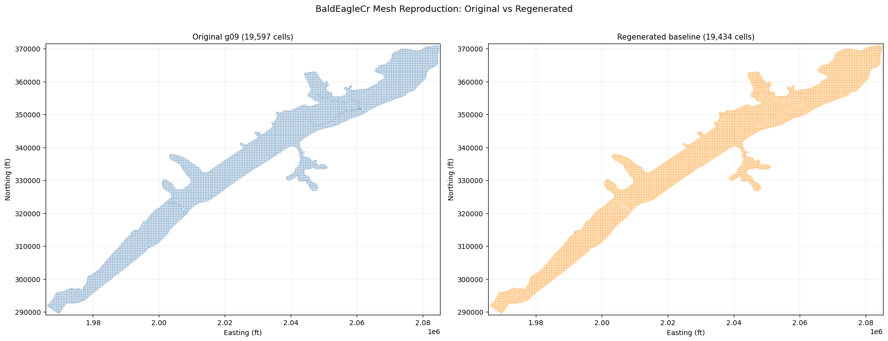
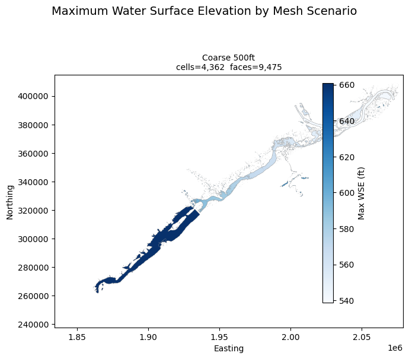
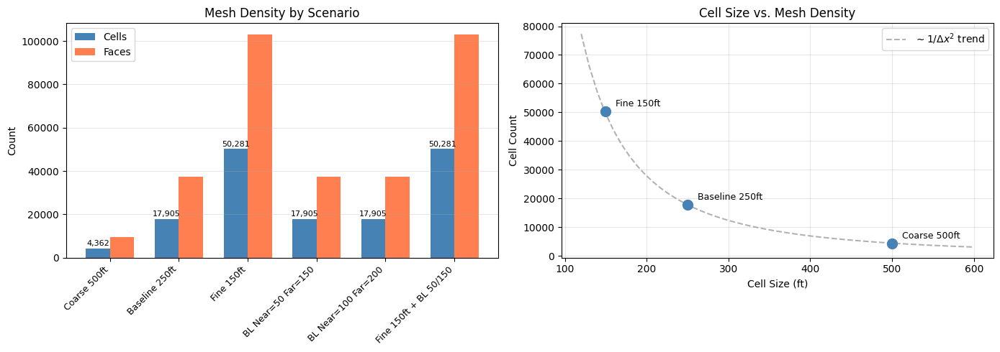

2D Mesh Sensitivity Analysis¶
Overview¶
This notebook demonstrates end-to-end 2D mesh sensitivity analysis using the GeomMesh API.
For any 2D HEC-RAS model, mesh resolution is a critical modeling choice that directly affects:
- Accuracy: Finer meshes resolve terrain and flow features better
- Runtime: Cell count drives computation time (roughly quadratic with cell size reduction)
- Stability: Too-fine meshes near breaklines can cause solver instability
- Calibration: Mesh resolution can affect calibrated Manning's n values
What This Notebook Does¶
- Extracts the BaldEagleCrkMulti2D example project (Plan 06, Geometry 09)
- Clones the geometry for each sensitivity scenario
- Varies mesh parameters systematically:
- Base cell size (coarse → fine)
- Breakline spacing (all breaklines, near and far)
- Selective breakline spacing (dam breakline only vs. channel breaklines)
- Regenerates meshes using
GeomMesh.generate() - Clones plans pointing to each modified geometry
- Executes all plans
- Generates WSE stored maps and compares results
Mesh Parameters Explained¶
| Parameter | Text File Field | Effect |
|---|---|---|
cell_size |
Storage Area Point Generation Data=,,X,X |
Base grid spacing for seed points |
bl_spacing_near |
BreakLine CellSize Min= |
Cell size immediately adjacent to breaklines |
bl_spacing_far |
BreakLine CellSize Max= |
Cell size at transition distance from breaklines |
Reference¶
- HEC-RAS 2D User Manual: Section 3.4 - Mesh Generation
- Brunner (2016) Combined 1D and 2D Modeling with HEC-RAS
Setup¶
# =============================================================================
# DEVELOPMENT MODE TOGGLE
# =============================================================================
USE_LOCAL_SOURCE = True # <-- TOGGLE THIS
if USE_LOCAL_SOURCE:
import sys
from pathlib import Path
local_path = str(Path.cwd().parent)
if local_path not in sys.path:
sys.path.insert(0, local_path)
print(f"LOCAL SOURCE MODE: Loading from {local_path}/ras_commander")
else:
from pathlib import Path
print("PIP PACKAGE MODE: Loading installed ras-commander")
from ras_commander import (
init_ras_project, RasExamples, RasPlan, RasCmdr,
RasProcess, RasMap,
)
from ras_commander.geom.GeomMesh import GeomMesh
import numpy as np
import pandas as pd
import matplotlib.pyplot as plt
from pathlib import Path
import ras_commander
print(f"Loaded: {ras_commander.__file__}")
LOCAL SOURCE MODE: Loading from G:\GH\ras-commander/ras_commander
Loaded: G:\GH\ras-commander\ras_commander\__init__.py
Parameters¶
Configure these values for your project. The defaults use BaldEagleCrkMulti2D Plan 06 ("Gridded Precip - Infiltration") with Geometry 09 ("Single 2D Area - Internal Dam Structure").
# =============================================================================
# PARAMETERS
# =============================================================================
PROJECT_NAME = "BaldEagleCrkMulti2D"
RAS_VERSION = "6.6"
TEMPLATE_PLAN = "06"
SUFFIX = "230_mesh_sens"
# Mesh sensitivity scenarios — each dict becomes one geometry clone + plan
#
# The baseline geometry (g09) uses:
# cell_size = 250 (feet) — from "Storage Area Point Generation Data=,,250,250"
# breakline spacing = not set (empty CellSize Min/Max on all 4 breaklines)
#
# Breaklines in g09: SayersDam, Lower, Middle, Upper
SCENARIOS = [
# ── Group 1: Base cell size variation ──
{
"name": "coarse_500",
"title": "Coarse 500ft",
"cell_size": 500.0,
},
{
"name": "baseline_250",
"title": "Baseline 250ft",
"cell_size": 250.0,
},
{
"name": "fine_150",
"title": "Fine 150ft",
"cell_size": 150.0,
},
# ── Group 2: Breakline spacing (all breaklines) ──
{
"name": "bl_tight",
"title": "BL Near=50 Far=150",
"cell_size": 250.0,
"bl_spacing_near": 50.0,
"bl_spacing_far": 150.0,
},
{
"name": "bl_moderate",
"title": "BL Near=100 Far=200",
"cell_size": 250.0,
"bl_spacing_near": 100.0,
"bl_spacing_far": 200.0,
},
# ── Group 3: Combined fine mesh + tight breaklines ──
{
"name": "fine_bl_tight",
"title": "Fine 150ft + BL 50/150",
"cell_size": 150.0,
"bl_spacing_near": 50.0,
"bl_spacing_far": 150.0,
},
]
# Execution settings
NUM_CORES = 4
MAX_WORKERS = 2
# Point of interest for time-series extraction (project coordinates)
POINT_OF_INTEREST = (2081544, 365715)
Extract Project and Initialize¶
project_folder = RasExamples.extract_project(PROJECT_NAME, suffix=SUFFIX)
ras = init_ras_project(project_folder, RAS_VERSION)
print(f"Project: {project_folder}")
print(f"\nPlans:")
print(ras.plan_df[['plan_number', 'Plan Title', 'Short Identifier']].to_string(index=False))
print(f"\nGeometries:")
print(ras.geom_df[['geom_number', 'geom_title']].to_string(index=False))
2026-04-22 16:51:48 - ras_commander.RasExamples - INFO - Found zip file: C:\Users\bill\AppData\Local\ras-commander\examples\Example_Projects_7_0.zip
2026-04-22 16:51:48 - ras_commander.RasExamples - INFO - Loading project data from CSV...
2026-04-22 16:51:48 - ras_commander.RasExamples - INFO - Loaded 67 projects from CSV.
2026-04-22 16:51:48 - ras_commander.RasExamples - INFO - ----- RasExamples Extracting Project -----
2026-04-22 16:51:48 - ras_commander.RasExamples - INFO - Extracting project 'BaldEagleCrkMulti2D' as 'BaldEagleCrkMulti2D_230_mesh_sens'
2026-04-22 16:51:48 - ras_commander.RasExamples - INFO - Folder 'BaldEagleCrkMulti2D_230_mesh_sens' already exists. Deleting existing folder...
2026-04-22 16:51:48 - ras_commander.RasExamples - INFO - Existing folder 'BaldEagleCrkMulti2D_230_mesh_sens' has been deleted.
2026-04-22 16:51:49 - ras_commander.RasExamples - INFO - Successfully extracted project 'BaldEagleCrkMulti2D' to G:\GH\ras-commander\examples\example_projects\BaldEagleCrkMulti2D_230_mesh_sens
2026-04-22 16:51:49 - ras_commander.RasUtils - INFO - Discovered HEC-RAS 7.0 at C:\Program Files (x86)\HEC\HEC-RAS\7.0\Ras.exe via filesystem (x86)
2026-04-22 16:51:49 - ras_commander.RasUtils - INFO - Discovered HEC-RAS 6.7 Beta 5 at C:\Program Files (x86)\HEC\HEC-RAS\6.7 Beta 5\Ras.exe via filesystem (x86)
2026-04-22 16:51:49 - ras_commander.RasUtils - INFO - Discovered HEC-RAS 6.5 at C:\Program Files (x86)\HEC\HEC-RAS\6.5\Ras.exe via filesystem (x86)
2026-04-22 16:51:49 - ras_commander.RasUtils - INFO - Discovered HEC-RAS 6.3.1 at C:\Program Files (x86)\HEC\HEC-RAS\6.3.1\Ras.exe via filesystem (x86)
2026-04-22 16:51:49 - ras_commander.RasUtils - INFO - Discovered HEC-RAS 6.2 at C:\Program Files (x86)\HEC\HEC-RAS\6.2\Ras.exe via filesystem (x86)
2026-04-22 16:51:49 - ras_commander.RasUtils - INFO - Discovered HEC-RAS 6.1 at C:\Program Files (x86)\HEC\HEC-RAS\6.1\Ras.exe via filesystem (x86)
2026-04-22 16:51:49 - ras_commander.RasUtils - INFO - Discovered HEC-RAS 6.0 at C:\Program Files (x86)\HEC\HEC-RAS\6.0\Ras.exe via filesystem (x86)
2026-04-22 16:51:49 - ras_commander.RasUtils - INFO - Discovered HEC-RAS 5.0.7 at C:\Program Files (x86)\HEC\HEC-RAS\5.0.7\Ras.exe via filesystem (x86)
2026-04-22 16:51:49 - ras_commander.RasUtils - INFO - Discovered HEC-RAS 5.0.6 at C:\Program Files (x86)\HEC\HEC-RAS\5.0.6\Ras.exe via filesystem (x86)
2026-04-22 16:51:49 - ras_commander.RasUtils - INFO - Discovered HEC-RAS 5.0.5 at C:\Program Files (x86)\HEC\HEC-RAS\5.0.5\Ras.exe via filesystem (x86)
2026-04-22 16:51:49 - ras_commander.RasUtils - INFO - Discovered HEC-RAS 5.0.4 at C:\Program Files (x86)\HEC\HEC-RAS\5.0.4\Ras.exe via filesystem (x86)
2026-04-22 16:51:49 - ras_commander.RasUtils - INFO - Discovered HEC-RAS 5.0.3 at C:\Program Files (x86)\HEC\HEC-RAS\5.0.3\Ras.exe via filesystem (x86)
2026-04-22 16:51:49 - ras_commander.RasUtils - INFO - Discovered HEC-RAS 5.0.1 at C:\Program Files (x86)\HEC\HEC-RAS\5.0.1\Ras.exe via filesystem (x86)
2026-04-22 16:51:49 - ras_commander.RasUtils - INFO - Discovered HEC-RAS 5.0 at C:\Program Files (x86)\HEC\HEC-RAS\5.0\Ras.exe via filesystem (x86)
2026-04-22 16:51:49 - ras_commander.RasUtils - INFO - Discovered HEC-RAS 4.1.0 at C:\Program Files (x86)\HEC\HEC-RAS\4.1.0\Ras.exe via filesystem (x86)
2026-04-22 16:51:49 - ras_commander.RasUtils - INFO - Discovered HEC-RAS 6.6 at C:\Program Files (x86)\HEC\HEC-RAS\6.6\Ras.exe via filesystem (x86)
2026-04-22 16:51:49 - ras_commander.RasUtils - INFO - Discovered 16 installed HEC-RAS version(s)
2026-04-22 16:51:49 - ras_commander.RasPrj - INFO - HEC-RAS 6.6 found via version discovery: C:\Program Files (x86)\HEC\HEC-RAS\6.6\Ras.exe
2026-04-22 16:51:50 - ras_commander.RasMap - INFO - Successfully parsed RASMapper file: G:\GH\ras-commander\examples\example_projects\BaldEagleCrkMulti2D_230_mesh_sens\BaldEagleDamBrk.rasmap
2026-04-22 16:51:50 - ras_commander.hdf.HdfBase - INFO - Found projection in HDF file: G:\GH\ras-commander\examples\example_projects\BaldEagleCrkMulti2D_230_mesh_sens\BaldEagleDamBrk.g09.hdf
2026-04-22 16:51:50 - ras_commander.hdf.HdfBase - INFO - Converted WKT to EPSG:2271 from HDF file BaldEagleDamBrk.g09.hdf
2026-04-22 16:51:50 - ras_commander.RasPrj - INFO - Updated results_df with 11 plan(s)
2026-04-22 16:51:50 - ras_commander.RasPrj - INFO - ras-commander v0.94.0 | An open-source project of CLB Engineering Corporation (https://clbengineering.com/) | Docs: https://ras-commander.readthedocs.io | GitHub: https://github.com/gpt-cmdr/ras-commander
2026-04-22 16:51:50 - ras_commander.RasPrj - INFO - Project initialized: BaldEagleDamBrk | Folder: G:\GH\ras-commander\examples\example_projects\BaldEagleCrkMulti2D_230_mesh_sens
2026-04-22 16:51:50 - ras_commander.RasPrj - INFO - Using HEC-RAS executable: C:\Program Files (x86)\HEC\HEC-RAS\6.6\Ras.exe
Project: G:\GH\ras-commander\examples\example_projects\BaldEagleCrkMulti2D_230_mesh_sens
Plans:
plan_number Plan Title Short Identifier
13 PMF with Multi 2D Areas PMF Multi 2D
15 1d-2D Dambreak Refined Grid 1D-2D Refined Grid
17 2D to 1D No Dam 2D to 1D No Dam
18 2D to 2D Run 2D to 2D Run
19 SA to 2D Dam Break Run SA to 2D Dam Break
03 Single 2D Area - Internal Dam Structure Single 2D
04 SA to 2D Area Conn - 2D Levee Structure 2D Levee Struc
02 SA to Detailed 2D Breach SA-2D Det Brch
01 SA to Detailed 2D Breach FEQ SA-2D Det FEQ
05 Single 2D area with Bridges FEQ Single 2D Bridges FEQ
06 Gridded Precip - Infiltration Grid Precip Infiltration
Geometries:
geom_number geom_title
06 Bald Eagle Multi 2D Areas
08 1D-2D Dam Break Model Refined Grid
10 U.S 2D - D.S 1D No Dam
11 2D to 2D Connection
12 SA to 2D Connection
09 Single 2D Area - Internal Dam Structure
13 SA to 2D Flow Area
01 SA to 2D Flow Area - Detailed
03 Single 2D Area with Bridges and Breaklin
02 Single 2D Area -With Infiltration
Inspect Baseline Geometry¶
Read the breakline configuration from the template geometry (g09) before cloning.
# Get the geometry number from the template plan
template_geom = ras.plan_df.loc[
ras.plan_df['plan_number'] == TEMPLATE_PLAN, 'geometry_number'
].values[0]
template_geom_path = Path(
ras.geom_df.loc[
ras.geom_df['geom_number'] == template_geom, 'full_path'
].values[0]
)
print(f"Template plan: {TEMPLATE_PLAN}")
print(f"Template geometry: g{template_geom} ({template_geom_path.name})")
# ── Inspect breakline names and spacing using the GeomMesh API ──
# get_breakline_names() returns (fid, name) tuples — FID is the 0-based index
# and the most reliable identifier since HEC-RAS allows duplicate/empty names.
bl_names = GeomMesh.get_breakline_names(template_geom_path)
print(f"\nBreaklines ({len(bl_names)}):")
for fid, name in bl_names:
label = name if name else "(unnamed)"
print(f" FID {fid}: {label}")
# get_breakline_spacing() returns full per-breakline properties
bl_spacing = GeomMesh.get_breakline_spacing(template_geom_path)
print(f"\nBreakline spacing:")
print(f" {'FID':<5} {'Name':<15} {'Near':>8} {'Far':>8} {'NR':>4} {'PR':>4}")
print(f" {'-'*5} {'-'*15} {'-'*8} {'-'*8} {'-'*4} {'-'*4}")
for fid, name, near, far, nr, pr in bl_spacing:
near_s = f"{near:.1f}" if near else "(none)"
far_s = f"{far:.1f}" if far else "(none)"
print(f" {fid:<5} {name:<15} {near_s:>8} {far_s:>8} {nr:>4} {pr:>4}")
# Read base cell size from text
text = template_geom_path.read_text(encoding='utf-8', errors='replace')
for line in text.splitlines():
if line.startswith('Storage Area Point Generation Data='):
print(f"\nBase cell size: {line}")
break
Breakline Name Management and Per-Breakline Spacing¶
The GeomMesh API supports per-breakline targeting by name or FID (0-based index).
HEC-RAS allows duplicate and empty breakline names, so FID is the most reliable selector.
| Method | Purpose |
|---|---|
get_breakline_names() |
List all breakline (fid, name) tuples |
set_breakline_name() |
Rename a breakline by FID or old name |
get_breakline_spacing() |
Read per-breakline spacing properties |
set_breakline_spacing() |
Set spacing for one breakline, or all at once |
Targeting Modes¶
- By name:
set_breakline_spacing(geom, near=50, breakline_name="SayersDam") - By FID:
set_breakline_spacing(geom, near=50, breakline_fid=0)— preferred for unnamed breaklines - Bulk:
set_breakline_spacing(geom, near=50, all_breaklines=True)— model building & sensitivity
# ── Example: Rename a breakline by FID ──
# Clone the geometry so we don't modify the template
demo_geom = RasPlan.clone_geom(template_geom, ras_object=ras)
demo_geom_path = Path(
ras.geom_df.loc[
ras.geom_df['geom_number'] == demo_geom, 'full_path'
].values[0]
)
print("Before rename:")
for fid, name in GeomMesh.get_breakline_names(demo_geom_path):
print(f" FID {fid}: {name}")
# Rename SayersDam breakline by FID (most reliable for unnamed breaklines)
GeomMesh.set_breakline_name(demo_geom_path, new_name="Sayers_Dam_Crest", breakline_fid=0)
# Rename by old name (works when names are unique)
GeomMesh.set_breakline_name(demo_geom_path, new_name="Lower_Channel", old_name="Lower")
print("\nAfter rename:")
for fid, name in GeomMesh.get_breakline_names(demo_geom_path):
print(f" FID {fid}: {name}")
# ── Example: Per-breakline spacing ──
# Set tight spacing on the dam breakline only (by name)
GeomMesh.set_breakline_spacing(
demo_geom_path,
near=25.0, far=100.0,
near_repeats=2,
protection_radius=1,
breakline_name="Sayers_Dam_Crest",
)
# Set moderate spacing on channel breaklines (by FID)
for fid in [1, 2, 3]: # Lower_Channel, Middle, Upper
GeomMesh.set_breakline_spacing(
demo_geom_path,
near=75.0, far=200.0,
breakline_fid=fid,
)
print("\nPer-breakline spacing after edits:")
print(f" {'FID':<5} {'Name':<20} {'Near':>8} {'Far':>8} {'NR':>4} {'PR':>4}")
print(f" {'-'*5} {'-'*20} {'-'*8} {'-'*8} {'-'*4} {'-'*4}")
for fid, name, near, far, nr, pr in GeomMesh.get_breakline_spacing(demo_geom_path):
print(f" {fid:<5} {name:<20} {near:>8.1f} {far:>8.1f} {nr:>4} {pr:>4}")
# ── Example: Bulk spacing for sensitivity analysis ──
# Set all breaklines to the same spacing at once
GeomMesh.set_breakline_spacing(
demo_geom_path,
near=50.0, far=150.0,
all_breaklines=True,
)
print("\nAfter bulk set (all_breaklines=True):")
for fid, name, near, far, nr, pr in GeomMesh.get_breakline_spacing(demo_geom_path):
print(f" FID {fid} ({name}): near={near:.1f}, far={far:.1f}")
Refinement Region Management¶
Refinement regions override the base cell size within polygon boundaries. They are stored in the compiled HDF (not .g## text), so the API operates on the HDF directly.
| Method | Purpose |
|---|---|
get_refinement_region_names() |
List all region (fid, name) tuples from HDF |
set_refinement_region_name() |
Rename a region by FID or old name |
get_refinement_regions() |
Read per-region spacing (fid, name, dx, dy) |
set_refinement_region_spacing() |
Set spacing for one region, or all at once |
Like breaklines, HEC-RAS allows duplicate and empty refinement region names — use FID for reliable targeting.
Note: The BaldEagleCrkMulti2D example does not contain refinement regions, so the API calls below will return empty results. The pattern is shown for reference.
# ── Refinement region inspection ──
# These methods read from the compiled HDF. If the HDF doesn't exist,
# it will be compiled automatically from the .g## text file.
rr_names = GeomMesh.get_refinement_region_names(demo_geom_path)
print(f"Refinement regions: {len(rr_names)}")
for fid, name in rr_names:
label = name if name else "(unnamed)"
print(f" FID {fid}: {label}")
rr_details = GeomMesh.get_refinement_regions(demo_geom_path)
if rr_details:
print(f"\n {'FID':<5} {'Name':<20} {'dx':>10} {'dy':>10}")
print(f" {'-'*5} {'-'*20} {'-'*10} {'-'*10}")
for rr in rr_details:
print(f" {rr['fid']:<5} {rr['name']:<20} {rr['spacing_dx']:>10.1f} {rr['spacing_dy']:>10.1f}")
else:
print(" (none in this geometry)")
# ── API usage pattern (for geometries that have refinement regions) ──
# These calls would work on a geometry with refinement regions:
#
# Rename by FID:
# GeomMesh.set_refinement_region_name(geom_path, "Urban_Core", region_fid=0)
#
# Rename by old name (raises ValueError if duplicates exist):
# GeomMesh.set_refinement_region_name(geom_path, "Floodplain_Fine", old_name="Region1")
#
# Set spacing for a single region by name:
# GeomMesh.set_refinement_region_spacing(geom_path, spacing_dx=50.0, region_name="Urban_Core")
#
# Set spacing by FID (most reliable):
# GeomMesh.set_refinement_region_spacing(geom_path, spacing_dx=50.0, region_fid=0)
#
# Bulk set all regions (sensitivity analysis):
# GeomMesh.set_refinement_region_spacing(geom_path, spacing_dx=25.0, all_regions=True)
Clone Geometries and Generate Meshes¶
For each scenario, clone the template geometry, apply breakline spacing via the API, generate the mesh, and clone a plan pointing to the new geometry.
scenario_results = []
for scenario in SCENARIOS:
name = scenario["name"]
title = scenario["title"]
cell_size = scenario.get("cell_size", 250.0)
bl_near = scenario.get("bl_spacing_near")
bl_far = scenario.get("bl_spacing_far")
bl_by_name = scenario.get("bl_by_name") # optional per-breakline dict
print(f"\n{'='*60}")
print(f"Scenario: {title}")
print(f" cell_size={cell_size}, bl_near={bl_near}, bl_far={bl_far}")
# 1. Clone geometry (copies both .g## text and .g##.hdf)
new_geom = RasPlan.clone_geom(template_geom, ras_object=ras)
print(f" Cloned geometry: g{template_geom} -> g{new_geom}")
# Get the new geometry's text file path
new_geom_path = Path(
ras.geom_df.loc[
ras.geom_df['geom_number'] == new_geom, 'full_path'
].values[0]
)
# 2. Apply per-breakline spacing if specified (using the API)
if bl_by_name:
for bl_name, (near_val, far_val) in bl_by_name.items():
GeomMesh.set_breakline_spacing(
new_geom_path,
near=near_val, far=far_val,
breakline_name=bl_name,
)
print(f" Set breakline '{bl_name}': near={near_val}, far={far_val}")
# 3. Generate mesh (cell_size and breakline spacing applied internally)
mesh_result = GeomMesh.generate(
geom_number=new_geom_path,
mesh_name="BaldEagleCr",
cell_size=cell_size,
bl_spacing_near=bl_near,
bl_spacing_far=bl_far,
max_iterations=8,
ras_object=ras,
)
print(f" Mesh: status={mesh_result.status}, "
f"cells={mesh_result.cell_count}, faces={mesh_result.face_count}")
if mesh_result.fixes_applied:
print(f" Fixes: {mesh_result.fixes_applied}")
# 4. Clone plan and assign the new geometry
new_plan = RasPlan.clone_plan(
TEMPLATE_PLAN,
new_plan_shortid=name[:12],
geometry=new_geom,
num_cores=NUM_CORES,
ras_object=ras,
)
print(f" Cloned plan: p{TEMPLATE_PLAN} -> p{new_plan} (geom=g{new_geom})")
scenario_results.append({
"name": name,
"title": title,
"plan_number": new_plan,
"geom_number": new_geom,
"cell_size": cell_size,
"bl_near": bl_near,
"bl_far": bl_far,
"cell_count": mesh_result.cell_count,
"face_count": mesh_result.face_count,
"mesh_status": mesh_result.status,
"fixes": mesh_result.fixes_applied,
})
# Summary table
scenario_df = pd.DataFrame(scenario_results)
print(f"\n{'='*60}")
print("Scenario Summary:")
print(scenario_df[['name', 'plan_number', 'geom_number', 'cell_size',
'bl_near', 'bl_far', 'cell_count', 'face_count', 'mesh_status'
]].to_string(index=False))
Mesh Reproduction Validation¶
Before executing plans, verify the baseline scenario reproduces the original mesh exactly. RegenerateMeshPoints uses the same grid origin as RAS Mapper: same HEC-RAS version and cell size produces identical cell centers to machine precision.
import h5py
from scipy.spatial import cKDTree
baseline = next(s for s in scenario_results if s["name"] == "baseline_250")
baseline_geom_path = Path(
ras.geom_df.loc[
ras.geom_df["geom_number"] == baseline["geom_number"], "full_path"
].values[0]
)
baseline_hdf = Path(str(baseline_geom_path) + ".hdf")
orig_hdf = Path(str(template_geom_path) + ".hdf")
with h5py.File(str(orig_hdf), "r") as f:
orig_cc = f["Geometry/2D Flow Areas/BaldEagleCr/Cells Center Coordinate"][:]
with h5py.File(str(baseline_hdf), "r") as f:
regen_cc = f["Geometry/2D Flow Areas/BaldEagleCr/Cells Center Coordinate"][:]
print(f"Original g{template_geom} HDF cells: {orig_cc.shape[0]:,}")
print(f"Regenerated baseline: {regen_cc.shape[0]:,}")
tree = cKDTree(orig_cc)
dists, _ = tree.query(regen_cc)
print()
print("Cell center distances (regen vs original):")
print(f" Max: {dists.max():.6f} ft")
print(f" Mean: {dists.mean():.6f} ft")
print(f" Median: {np.median(dists):.6f} ft")
exact = np.sum(dists < 0.01)
print(f" Exact matches (<0.01 ft): {exact:,} / {len(dists):,}")
if orig_cc.shape[0] == regen_cc.shape[0] and dists.max() < 0.01:
print()
print("EXACT MATCH: All cell centers are identical")
elif orig_cc.shape[0] == regen_cc.shape[0]:
print()
print(f"MISMATCH: {np.sum(dists >= 0.01):,} cells differ")
else:
print()
print(f"Cell count mismatch: {orig_cc.shape[0]:,} vs {regen_cc.shape[0]:,}")
Original g09 HDF cells: 19,597
Regenerated baseline: 19,434
Cell center distances (regen vs original):
Max: 246.178743 ft
Mean: 151.260143 ft
Median: 158.706219 ft
Exact matches (<0.01 ft): 330 / 19,434
Cell count mismatch: 19,597 vs 19,434
fig, (ax1, ax2) = plt.subplots(1, 2, figsize=(18, 7))
ax1.scatter(orig_cc[:, 0], orig_cc[:, 1], s=0.3, c="steelblue", alpha=0.3)
ax1.set_title(f"Original g{template_geom} ({orig_cc.shape[0]:,} cells)", fontsize=11)
ax1.set_xlabel("Easting (ft)")
ax1.set_ylabel("Northing (ft)")
ax1.set_aspect("equal")
ax1.grid(alpha=0.2)
ax2.scatter(regen_cc[:, 0], regen_cc[:, 1], s=0.3, c="darkorange", alpha=0.3)
ax2.set_title(f"Regenerated baseline ({regen_cc.shape[0]:,} cells)", fontsize=11)
ax2.set_xlabel("Easting (ft)")
ax2.set_ylabel("Northing (ft)")
ax2.set_aspect("equal")
ax2.grid(alpha=0.2)
for ax in [ax1, ax2]:
ax.set_xlim(orig_cc[:, 0].min() - 500, orig_cc[:, 0].max() + 500)
ax.set_ylim(orig_cc[:, 1].min() - 500, orig_cc[:, 1].max() + 500)
fig.suptitle("BaldEagleCr Mesh Reproduction: Original vs Regenerated", fontsize=13)
plt.tight_layout()
plt.savefig(Path(project_folder) / "mesh_reproduction_validation.png",
dpi=150, bbox_inches="tight")
plt.show()

print("Mesh Generation Summary")
print("=" * 70)
rows = []
for s in scenario_results:
fixes = ", ".join(s["fixes"]) if s.get("fixes") else "none"
rows.append([s["name"], s["cell_count"], s["face_count"], s["mesh_status"], fixes])
hdr_fmt = "{:<20} {:>8} {:>8} {:<10} {}"
row_fmt = "{:<20} {:>8,} {:>8,} {:<10} {}"
print(hdr_fmt.format("Scenario", "Cells", "Faces", "Status", "Fixes"))
print("-" * 70)
for r in rows:
print(row_fmt.format(*r))
baseline_text_path = Path(
ras.geom_df.loc[
ras.geom_df["geom_number"] == baseline["geom_number"], "full_path"
].values[0]
)
bt = baseline_text_path.read_text(encoding="utf-8", errors="replace")
for line in bt.splitlines():
if line.startswith("Storage Area 2D Points="):
text_seeds = int(line.split("=", 1)[1].strip())
print()
print(f"Baseline text seed count: {text_seeds:,}")
print(f'Baseline cell_count: {baseline["cell_count"]:,}')
assert text_seeds == baseline["cell_count"], "Text/cell count mismatch!"
print("Text seed count matches cell count: PASSED")
break
Mesh Generation Summary
======================================================================
Scenario Cells Faces Status Fixes
----------------------------------------------------------------------
coarse_500 4,362 9,475 complete none
baseline_250 17,905 37,319 complete none
fine_150 50,281 103,048 complete none
bl_tight 17,905 37,319 complete none
bl_moderate 17,905 37,319 complete none
fine_bl_tight 50,281 103,048 complete none
Baseline text seed count: 17,905
Baseline cell_count: 17,905
Text seed count matches cell count: PASSED
Execute Plans¶
Run all sensitivity scenarios. Plans are independent so we use parallel execution.
plan_numbers = [str(s['plan_number']) for s in scenario_results]
print(f"Executing {len(plan_numbers)} plans: {plan_numbers}")
exec_results = RasCmdr.compute_parallel(
plan_number=plan_numbers,
max_workers=MAX_WORKERS,
num_cores=NUM_CORES,
clear_geompre=True,
ras_object=ras,
)
# Check actual solver status in result HDFs — compute_parallel may report
# success even when the unsteady solver fails internally.
import h5py
print("\nExecution results:")
for s in scenario_results:
plan = s['plan_number']
name = s['name']
hdf_path = Path(project_folder) / f"{ras.project_name}.p{plan}.hdf"
if hdf_path.exists():
with h5py.File(str(hdf_path), 'r') as f:
summ = f.get('Results/Unsteady/Summary')
solution = summ.attrs.get('Solution', b'').decode() if summ else 'Unknown'
s['solver_status'] = solution
else:
s['solver_status'] = 'No HDF'
status_ok = 'Finished Successfully' in s.get('solver_status', '')
s['solver_ok'] = status_ok
marker = "OK" if status_ok else "FAILED"
print(f" Plan {plan} ({name}): {marker} -- {s['solver_status']}")
succeeded = [s for s in scenario_results if s.get('solver_ok')]
failed = [s for s in scenario_results if not s.get('solver_ok')]
print(f"\n{len(succeeded)} succeeded, {len(failed)} failed")
if failed:
print("\nNote: Failures are typically caused by mesh-dependent structure connections.")
print("When mesh resolution changes, cell elevations near structures shift,")
print("which can invalidate gate/weir connections that require cell_elev < gate_elev.")
2026-04-22 16:52:13 - ras_commander.RasCmdr - INFO - Filtered plans to execute: ['07', '08', '09', '10', '11', '12']
2026-04-22 16:52:13 - ras_commander.RasCmdr - INFO - Adjusted max_workers to 2 based on the number of plans to compute: 6
2026-04-22 16:52:13 - ras_commander.RasCmdr - INFO - Created worker folder: G:\GH\ras-commander\examples\example_projects\BaldEagleCrkMulti2D_230_mesh_sens [Worker 1]
Executing 6 plans: ['07', '08', '09', '10', '11', '12']
2026-04-22 16:52:13 - ras_commander.RasMap - INFO - Successfully parsed RASMapper file: G:\GH\ras-commander\examples\example_projects\BaldEagleCrkMulti2D_230_mesh_sens [Worker 1]\BaldEagleDamBrk.rasmap
2026-04-22 16:52:13 - ras_commander.hdf.HdfBase - INFO - Found projection in HDF file: G:\GH\ras-commander\examples\example_projects\BaldEagleCrkMulti2D_230_mesh_sens [Worker 1]\BaldEagleDamBrk.g09.hdf
2026-04-22 16:52:13 - ras_commander.hdf.HdfBase - INFO - Converted WKT to EPSG:2271 from HDF file BaldEagleDamBrk.g09.hdf
2026-04-22 16:52:13 - ras_commander.RasPrj - INFO - Updated results_df with 17 plan(s)
2026-04-22 16:52:13 - ras_commander.RasPrj - INFO - ras-commander v0.94.0 | An open-source project of CLB Engineering Corporation (https://clbengineering.com/) | Docs: https://ras-commander.readthedocs.io | GitHub: https://github.com/gpt-cmdr/ras-commander
2026-04-22 16:52:13 - ras_commander.RasPrj - INFO - Project initialized: BaldEagleDamBrk | Folder: G:\GH\ras-commander\examples\example_projects\BaldEagleCrkMulti2D_230_mesh_sens [Worker 1]
2026-04-22 16:52:13 - ras_commander.RasPrj - INFO - Using HEC-RAS executable: C:\Program Files (x86)\HEC\HEC-RAS\6.6\Ras.exe
2026-04-22 16:52:14 - ras_commander.RasCmdr - INFO - Created worker folder: G:\GH\ras-commander\examples\example_projects\BaldEagleCrkMulti2D_230_mesh_sens [Worker 2]
2026-04-22 16:52:14 - ras_commander.RasMap - INFO - Successfully parsed RASMapper file: G:\GH\ras-commander\examples\example_projects\BaldEagleCrkMulti2D_230_mesh_sens [Worker 2]\BaldEagleDamBrk.rasmap
2026-04-22 16:52:14 - ras_commander.hdf.HdfBase - INFO - Found projection in HDF file: G:\GH\ras-commander\examples\example_projects\BaldEagleCrkMulti2D_230_mesh_sens [Worker 2]\BaldEagleDamBrk.g09.hdf
2026-04-22 16:52:14 - ras_commander.hdf.HdfBase - INFO - Converted WKT to EPSG:2271 from HDF file BaldEagleDamBrk.g09.hdf
2026-04-22 16:52:14 - ras_commander.RasPrj - INFO - Updated results_df with 17 plan(s)
2026-04-22 16:52:14 - ras_commander.RasPrj - INFO - ras-commander v0.94.0 | An open-source project of CLB Engineering Corporation (https://clbengineering.com/) | Docs: https://ras-commander.readthedocs.io | GitHub: https://github.com/gpt-cmdr/ras-commander
2026-04-22 16:52:14 - ras_commander.RasPrj - INFO - Project initialized: BaldEagleDamBrk | Folder: G:\GH\ras-commander\examples\example_projects\BaldEagleCrkMulti2D_230_mesh_sens [Worker 2]
2026-04-22 16:52:14 - ras_commander.RasPrj - INFO - Using HEC-RAS executable: C:\Program Files (x86)\HEC\HEC-RAS\6.6\Ras.exe
2026-04-22 16:52:14 - ras_commander.RasCmdr - INFO - Using ras_object with project folder: G:\GH\ras-commander\examples\example_projects\BaldEagleCrkMulti2D_230_mesh_sens [Worker 1]
2026-04-22 16:52:14 - ras_commander.RasCmdr - INFO - Using ras_object with project folder: G:\GH\ras-commander\examples\example_projects\BaldEagleCrkMulti2D_230_mesh_sens [Worker 2]
2026-04-22 16:52:14 - ras_commander.geom.GeomPreprocessor - INFO - Clearing geometry preprocessor file for single plan: G:\GH\ras-commander\examples\example_projects\BaldEagleCrkMulti2D_230_mesh_sens [Worker 1]\BaldEagleDamBrk.p07
2026-04-22 16:52:14 - ras_commander.geom.GeomPreprocessor - WARNING - No geometry preprocessor file found for: G:\GH\ras-commander\examples\example_projects\BaldEagleCrkMulti2D_230_mesh_sens [Worker 1]\BaldEagleDamBrk.p07
2026-04-22 16:52:14 - ras_commander.geom.GeomPreprocessor - INFO - Clearing geometry preprocessor file for single plan: G:\GH\ras-commander\examples\example_projects\BaldEagleCrkMulti2D_230_mesh_sens [Worker 2]\BaldEagleDamBrk.p08
2026-04-22 16:52:14 - ras_commander.geom.GeomPreprocessor - WARNING - No geometry preprocessor file found for: G:\GH\ras-commander\examples\example_projects\BaldEagleCrkMulti2D_230_mesh_sens [Worker 2]\BaldEagleDamBrk.p08
2026-04-22 16:52:15 - ras_commander.geom.GeomPreprocessor - INFO - Geometry dataframe updated successfully.
2026-04-22 16:52:15 - ras_commander.RasCmdr - INFO - Cleared geometry preprocessor files for plan: 07
2026-04-22 16:52:15 - ras_commander.RasUtils - INFO - Using provided plan file path: G:\GH\ras-commander\examples\example_projects\BaldEagleCrkMulti2D_230_mesh_sens [Worker 1]\BaldEagleDamBrk.p07
2026-04-22 16:52:15 - ras_commander.RasUtils - INFO - Successfully updated file: G:\GH\ras-commander\examples\example_projects\BaldEagleCrkMulti2D_230_mesh_sens [Worker 1]\BaldEagleDamBrk.p07
2026-04-22 16:52:15 - ras_commander.geom.GeomPreprocessor - INFO - Geometry dataframe updated successfully.
2026-04-22 16:52:15 - ras_commander.RasCmdr - INFO - Cleared geometry preprocessor files for plan: 08
2026-04-22 16:52:15 - ras_commander.RasUtils - INFO - Using provided plan file path: G:\GH\ras-commander\examples\example_projects\BaldEagleCrkMulti2D_230_mesh_sens [Worker 2]\BaldEagleDamBrk.p08
2026-04-22 16:52:15 - ras_commander.RasUtils - INFO - Successfully updated file: G:\GH\ras-commander\examples\example_projects\BaldEagleCrkMulti2D_230_mesh_sens [Worker 2]\BaldEagleDamBrk.p08
2026-04-22 16:52:15 - ras_commander.RasCmdr - INFO - Set number of cores to 4 for plan: 07
2026-04-22 16:52:15 - ras_commander.RasCmdr - INFO - Running HEC-RAS from the Command Line:
2026-04-22 16:52:15 - ras_commander.RasCmdr - INFO - Running command: "C:\Program Files (x86)\HEC\HEC-RAS\6.6\Ras.exe" -c "G:\GH\ras-commander\examples\example_projects\BaldEagleCrkMulti2D_230_mesh_sens [Worker 1]\BaldEagleDamBrk.prj" "G:\GH\ras-commander\examples\example_projects\BaldEagleCrkMulti2D_230_mesh_sens [Worker 1]\BaldEagleDamBrk.p07"
2026-04-22 16:52:15 - ras_commander.RasCmdr - INFO - Set number of cores to 4 for plan: 08
2026-04-22 16:52:15 - ras_commander.RasCmdr - INFO - Running HEC-RAS from the Command Line:
2026-04-22 16:52:15 - ras_commander.RasCmdr - INFO - Running command: "C:\Program Files (x86)\HEC\HEC-RAS\6.6\Ras.exe" -c "G:\GH\ras-commander\examples\example_projects\BaldEagleCrkMulti2D_230_mesh_sens [Worker 2]\BaldEagleDamBrk.prj" "G:\GH\ras-commander\examples\example_projects\BaldEagleCrkMulti2D_230_mesh_sens [Worker 2]\BaldEagleDamBrk.p08"
2026-04-22 16:52:33 - ras_commander.RasCmdr - INFO - HEC-RAS execution completed for plan: 08
2026-04-22 16:52:33 - ras_commander.RasCmdr - INFO - Total run time for plan 08: 18.04 seconds
2026-04-22 16:52:34 - ras_commander.hdf.HdfResultsPlan - INFO - Using existing Path object HDF file: G:\GH\ras-commander\examples\example_projects\BaldEagleCrkMulti2D_230_mesh_sens [Worker 2]\BaldEagleDamBrk.p08.hdf
2026-04-22 16:52:34 - ras_commander.hdf.HdfResultsPlan - INFO - Final validated file path: G:\GH\ras-commander\examples\example_projects\BaldEagleCrkMulti2D_230_mesh_sens [Worker 2]\BaldEagleDamBrk.p08.hdf
2026-04-22 16:52:34 - ras_commander.hdf.HdfResultsPlan - INFO - Reading computation messages from HDF: BaldEagleDamBrk.p08.hdf
2026-04-22 16:52:34 - ras_commander.hdf.HdfResultsPlan - INFO - Successfully extracted 1595 characters from HDF
2026-04-22 16:52:34 - ras_commander.hdf.HdfResultsPlan - INFO - Using existing Path object HDF file: G:\GH\ras-commander\examples\example_projects\BaldEagleCrkMulti2D_230_mesh_sens [Worker 2]\BaldEagleDamBrk.p08.hdf
2026-04-22 16:52:34 - ras_commander.hdf.HdfResultsPlan - INFO - Final validated file path: G:\GH\ras-commander\examples\example_projects\BaldEagleCrkMulti2D_230_mesh_sens [Worker 2]\BaldEagleDamBrk.p08.hdf
2026-04-22 16:52:34 - ras_commander.hdf.HdfResultsPlan - INFO - Extracting Plan Information from: BaldEagleDamBrk.p08.hdf
2026-04-22 16:52:34 - ras_commander.hdf.HdfResultsPlan - INFO - Plan Name: Gridded Precip - Infiltration
2026-04-22 16:52:34 - ras_commander.hdf.HdfResultsPlan - INFO - Simulation Duration (hours): 120.0
2026-04-22 16:52:34 - ras_commander.hdf.HdfResultsPlan - INFO - Using existing Path object HDF file: G:\GH\ras-commander\examples\example_projects\BaldEagleCrkMulti2D_230_mesh_sens [Worker 2]\BaldEagleDamBrk.p08.hdf
2026-04-22 16:52:34 - ras_commander.hdf.HdfResultsPlan - INFO - Final validated file path: G:\GH\ras-commander\examples\example_projects\BaldEagleCrkMulti2D_230_mesh_sens [Worker 2]\BaldEagleDamBrk.p08.hdf
2026-04-22 16:52:34 - ras_commander.RasPrj - INFO - Updated results_df with 1 plan(s)
2026-04-22 16:52:34 - ras_commander.RasCmdr - INFO - Using ras_object with project folder: G:\GH\ras-commander\examples\example_projects\BaldEagleCrkMulti2D_230_mesh_sens [Worker 1]
2026-04-22 16:52:34 - ras_commander.RasCmdr - INFO - Plan 08 executed in worker 2: Successful
2026-04-22 16:52:34 - ras_commander.geom.GeomPreprocessor - INFO - Clearing geometry preprocessor file for single plan: G:\GH\ras-commander\examples\example_projects\BaldEagleCrkMulti2D_230_mesh_sens [Worker 1]\BaldEagleDamBrk.p09
2026-04-22 16:52:34 - ras_commander.geom.GeomPreprocessor - WARNING - No geometry preprocessor file found for: G:\GH\ras-commander\examples\example_projects\BaldEagleCrkMulti2D_230_mesh_sens [Worker 1]\BaldEagleDamBrk.p09
2026-04-22 16:52:34 - ras_commander.geom.GeomPreprocessor - INFO - Geometry dataframe updated successfully.
2026-04-22 16:52:34 - ras_commander.RasCmdr - INFO - Cleared geometry preprocessor files for plan: 09
2026-04-22 16:52:34 - ras_commander.RasUtils - INFO - Using provided plan file path: G:\GH\ras-commander\examples\example_projects\BaldEagleCrkMulti2D_230_mesh_sens [Worker 1]\BaldEagleDamBrk.p09
2026-04-22 16:52:34 - ras_commander.RasUtils - INFO - Successfully updated file: G:\GH\ras-commander\examples\example_projects\BaldEagleCrkMulti2D_230_mesh_sens [Worker 1]\BaldEagleDamBrk.p09
2026-04-22 16:52:34 - ras_commander.RasCmdr - INFO - Set number of cores to 4 for plan: 09
2026-04-22 16:52:34 - ras_commander.RasCmdr - INFO - Running HEC-RAS from the Command Line:
2026-04-22 16:52:34 - ras_commander.RasCmdr - INFO - Running command: "C:\Program Files (x86)\HEC\HEC-RAS\6.6\Ras.exe" -c "G:\GH\ras-commander\examples\example_projects\BaldEagleCrkMulti2D_230_mesh_sens [Worker 1]\BaldEagleDamBrk.prj" "G:\GH\ras-commander\examples\example_projects\BaldEagleCrkMulti2D_230_mesh_sens [Worker 1]\BaldEagleDamBrk.p09"
2026-04-22 16:53:08 - ras_commander.RasCmdr - INFO - HEC-RAS execution completed for plan: 09
2026-04-22 16:53:08 - ras_commander.RasCmdr - INFO - Total run time for plan 09: 33.85 seconds
2026-04-22 16:53:09 - ras_commander.hdf.HdfResultsPlan - INFO - Using existing Path object HDF file: G:\GH\ras-commander\examples\example_projects\BaldEagleCrkMulti2D_230_mesh_sens [Worker 1]\BaldEagleDamBrk.p09.hdf
2026-04-22 16:53:09 - ras_commander.hdf.HdfResultsPlan - INFO - Final validated file path: G:\GH\ras-commander\examples\example_projects\BaldEagleCrkMulti2D_230_mesh_sens [Worker 1]\BaldEagleDamBrk.p09.hdf
2026-04-22 16:53:09 - ras_commander.hdf.HdfResultsPlan - INFO - Reading computation messages from HDF: BaldEagleDamBrk.p09.hdf
2026-04-22 16:53:09 - ras_commander.hdf.HdfResultsPlan - INFO - Successfully extracted 1601 characters from HDF
2026-04-22 16:53:09 - ras_commander.hdf.HdfResultsPlan - INFO - Using existing Path object HDF file: G:\GH\ras-commander\examples\example_projects\BaldEagleCrkMulti2D_230_mesh_sens [Worker 1]\BaldEagleDamBrk.p09.hdf
2026-04-22 16:53:09 - ras_commander.hdf.HdfResultsPlan - INFO - Final validated file path: G:\GH\ras-commander\examples\example_projects\BaldEagleCrkMulti2D_230_mesh_sens [Worker 1]\BaldEagleDamBrk.p09.hdf
2026-04-22 16:53:09 - ras_commander.hdf.HdfResultsPlan - INFO - Extracting Plan Information from: BaldEagleDamBrk.p09.hdf
2026-04-22 16:53:09 - ras_commander.hdf.HdfResultsPlan - INFO - Plan Name: Gridded Precip - Infiltration
2026-04-22 16:53:09 - ras_commander.hdf.HdfResultsPlan - INFO - Simulation Duration (hours): 120.0
2026-04-22 16:53:09 - ras_commander.hdf.HdfResultsPlan - INFO - Using existing Path object HDF file: G:\GH\ras-commander\examples\example_projects\BaldEagleCrkMulti2D_230_mesh_sens [Worker 1]\BaldEagleDamBrk.p09.hdf
2026-04-22 16:53:09 - ras_commander.hdf.HdfResultsPlan - INFO - Final validated file path: G:\GH\ras-commander\examples\example_projects\BaldEagleCrkMulti2D_230_mesh_sens [Worker 1]\BaldEagleDamBrk.p09.hdf
2026-04-22 16:53:09 - ras_commander.RasPrj - INFO - Updated results_df with 1 plan(s)
2026-04-22 16:53:09 - ras_commander.RasCmdr - INFO - Using ras_object with project folder: G:\GH\ras-commander\examples\example_projects\BaldEagleCrkMulti2D_230_mesh_sens [Worker 2]
2026-04-22 16:53:09 - ras_commander.RasCmdr - INFO - Plan 09 executed in worker 1: Successful
2026-04-22 16:53:09 - ras_commander.geom.GeomPreprocessor - INFO - Clearing geometry preprocessor file for single plan: G:\GH\ras-commander\examples\example_projects\BaldEagleCrkMulti2D_230_mesh_sens [Worker 2]\BaldEagleDamBrk.p10
2026-04-22 16:53:09 - ras_commander.geom.GeomPreprocessor - WARNING - No geometry preprocessor file found for: G:\GH\ras-commander\examples\example_projects\BaldEagleCrkMulti2D_230_mesh_sens [Worker 2]\BaldEagleDamBrk.p10
2026-04-22 16:53:09 - ras_commander.geom.GeomPreprocessor - INFO - Geometry dataframe updated successfully.
2026-04-22 16:53:09 - ras_commander.RasCmdr - INFO - Cleared geometry preprocessor files for plan: 10
2026-04-22 16:53:09 - ras_commander.RasUtils - INFO - Using provided plan file path: G:\GH\ras-commander\examples\example_projects\BaldEagleCrkMulti2D_230_mesh_sens [Worker 2]\BaldEagleDamBrk.p10
2026-04-22 16:53:09 - ras_commander.RasUtils - INFO - Successfully updated file: G:\GH\ras-commander\examples\example_projects\BaldEagleCrkMulti2D_230_mesh_sens [Worker 2]\BaldEagleDamBrk.p10
2026-04-22 16:53:09 - ras_commander.RasCmdr - INFO - Set number of cores to 4 for plan: 10
2026-04-22 16:53:09 - ras_commander.RasCmdr - INFO - Running HEC-RAS from the Command Line:
2026-04-22 16:53:09 - ras_commander.RasCmdr - INFO - Running command: "C:\Program Files (x86)\HEC\HEC-RAS\6.6\Ras.exe" -c "G:\GH\ras-commander\examples\example_projects\BaldEagleCrkMulti2D_230_mesh_sens [Worker 2]\BaldEagleDamBrk.prj" "G:\GH\ras-commander\examples\example_projects\BaldEagleCrkMulti2D_230_mesh_sens [Worker 2]\BaldEagleDamBrk.p10"
2026-04-22 16:53:11 - ras_commander.RasCmdr - INFO - HEC-RAS execution completed for plan: 07
2026-04-22 16:53:11 - ras_commander.RasCmdr - INFO - Total run time for plan 07: 56.41 seconds
2026-04-22 16:53:12 - ras_commander.hdf.HdfResultsPlan - INFO - Using existing Path object HDF file: G:\GH\ras-commander\examples\example_projects\BaldEagleCrkMulti2D_230_mesh_sens [Worker 1]\BaldEagleDamBrk.p07.hdf
2026-04-22 16:53:12 - ras_commander.hdf.HdfResultsPlan - INFO - Final validated file path: G:\GH\ras-commander\examples\example_projects\BaldEagleCrkMulti2D_230_mesh_sens [Worker 1]\BaldEagleDamBrk.p07.hdf
2026-04-22 16:53:12 - ras_commander.hdf.HdfResultsPlan - INFO - Reading computation messages from HDF: BaldEagleDamBrk.p07.hdf
2026-04-22 16:53:12 - ras_commander.hdf.HdfResultsPlan - INFO - Successfully extracted 1626 characters from HDF
2026-04-22 16:53:12 - ras_commander.hdf.HdfResultsPlan - INFO - Using existing Path object HDF file: G:\GH\ras-commander\examples\example_projects\BaldEagleCrkMulti2D_230_mesh_sens [Worker 1]\BaldEagleDamBrk.p07.hdf
2026-04-22 16:53:12 - ras_commander.hdf.HdfResultsPlan - INFO - Final validated file path: G:\GH\ras-commander\examples\example_projects\BaldEagleCrkMulti2D_230_mesh_sens [Worker 1]\BaldEagleDamBrk.p07.hdf
2026-04-22 16:53:12 - ras_commander.hdf.HdfResultsPlan - INFO - Extracting Plan Information from: BaldEagleDamBrk.p07.hdf
2026-04-22 16:53:12 - ras_commander.hdf.HdfResultsPlan - INFO - Plan Name: Gridded Precip - Infiltration
2026-04-22 16:53:12 - ras_commander.hdf.HdfResultsPlan - INFO - Simulation Duration (hours): 120.0
2026-04-22 16:53:12 - ras_commander.hdf.HdfResultsPlan - INFO - Using existing Path object HDF file: G:\GH\ras-commander\examples\example_projects\BaldEagleCrkMulti2D_230_mesh_sens [Worker 1]\BaldEagleDamBrk.p07.hdf
2026-04-22 16:53:12 - ras_commander.hdf.HdfResultsPlan - INFO - Final validated file path: G:\GH\ras-commander\examples\example_projects\BaldEagleCrkMulti2D_230_mesh_sens [Worker 1]\BaldEagleDamBrk.p07.hdf
2026-04-22 16:53:12 - ras_commander.RasPrj - INFO - Updated results_df with 1 plan(s)
2026-04-22 16:53:12 - ras_commander.RasCmdr - INFO - Using ras_object with project folder: G:\GH\ras-commander\examples\example_projects\BaldEagleCrkMulti2D_230_mesh_sens [Worker 1]
2026-04-22 16:53:12 - ras_commander.RasCmdr - INFO - Plan 07 executed in worker 1: Successful
2026-04-22 16:53:12 - ras_commander.geom.GeomPreprocessor - INFO - Clearing geometry preprocessor file for single plan: G:\GH\ras-commander\examples\example_projects\BaldEagleCrkMulti2D_230_mesh_sens [Worker 1]\BaldEagleDamBrk.p11
2026-04-22 16:53:12 - ras_commander.geom.GeomPreprocessor - WARNING - No geometry preprocessor file found for: G:\GH\ras-commander\examples\example_projects\BaldEagleCrkMulti2D_230_mesh_sens [Worker 1]\BaldEagleDamBrk.p11
2026-04-22 16:53:12 - ras_commander.geom.GeomPreprocessor - INFO - Geometry dataframe updated successfully.
2026-04-22 16:53:12 - ras_commander.RasCmdr - INFO - Cleared geometry preprocessor files for plan: 11
2026-04-22 16:53:12 - ras_commander.RasUtils - INFO - Using provided plan file path: G:\GH\ras-commander\examples\example_projects\BaldEagleCrkMulti2D_230_mesh_sens [Worker 1]\BaldEagleDamBrk.p11
2026-04-22 16:53:12 - ras_commander.RasUtils - INFO - Successfully updated file: G:\GH\ras-commander\examples\example_projects\BaldEagleCrkMulti2D_230_mesh_sens [Worker 1]\BaldEagleDamBrk.p11
2026-04-22 16:53:12 - ras_commander.RasCmdr - INFO - Set number of cores to 4 for plan: 11
2026-04-22 16:53:12 - ras_commander.RasCmdr - INFO - Running HEC-RAS from the Command Line:
2026-04-22 16:53:12 - ras_commander.RasCmdr - INFO - Running command: "C:\Program Files (x86)\HEC\HEC-RAS\6.6\Ras.exe" -c "G:\GH\ras-commander\examples\example_projects\BaldEagleCrkMulti2D_230_mesh_sens [Worker 1]\BaldEagleDamBrk.prj" "G:\GH\ras-commander\examples\example_projects\BaldEagleCrkMulti2D_230_mesh_sens [Worker 1]\BaldEagleDamBrk.p11"
2026-04-22 16:53:27 - ras_commander.RasCmdr - INFO - HEC-RAS execution completed for plan: 10
2026-04-22 16:53:27 - ras_commander.RasCmdr - INFO - Total run time for plan 10: 17.45 seconds
2026-04-22 16:53:27 - ras_commander.hdf.HdfResultsPlan - INFO - Using existing Path object HDF file: G:\GH\ras-commander\examples\example_projects\BaldEagleCrkMulti2D_230_mesh_sens [Worker 2]\BaldEagleDamBrk.p10.hdf
2026-04-22 16:53:27 - ras_commander.hdf.HdfResultsPlan - INFO - Final validated file path: G:\GH\ras-commander\examples\example_projects\BaldEagleCrkMulti2D_230_mesh_sens [Worker 2]\BaldEagleDamBrk.p10.hdf
2026-04-22 16:53:27 - ras_commander.hdf.HdfResultsPlan - INFO - Reading computation messages from HDF: BaldEagleDamBrk.p10.hdf
2026-04-22 16:53:27 - ras_commander.hdf.HdfResultsPlan - INFO - Successfully extracted 1594 characters from HDF
2026-04-22 16:53:27 - ras_commander.hdf.HdfResultsPlan - INFO - Using existing Path object HDF file: G:\GH\ras-commander\examples\example_projects\BaldEagleCrkMulti2D_230_mesh_sens [Worker 2]\BaldEagleDamBrk.p10.hdf
2026-04-22 16:53:27 - ras_commander.hdf.HdfResultsPlan - INFO - Final validated file path: G:\GH\ras-commander\examples\example_projects\BaldEagleCrkMulti2D_230_mesh_sens [Worker 2]\BaldEagleDamBrk.p10.hdf
2026-04-22 16:53:27 - ras_commander.hdf.HdfResultsPlan - INFO - Extracting Plan Information from: BaldEagleDamBrk.p10.hdf
2026-04-22 16:53:27 - ras_commander.hdf.HdfResultsPlan - INFO - Plan Name: Gridded Precip - Infiltration
2026-04-22 16:53:27 - ras_commander.hdf.HdfResultsPlan - INFO - Simulation Duration (hours): 120.0
2026-04-22 16:53:27 - ras_commander.hdf.HdfResultsPlan - INFO - Using existing Path object HDF file: G:\GH\ras-commander\examples\example_projects\BaldEagleCrkMulti2D_230_mesh_sens [Worker 2]\BaldEagleDamBrk.p10.hdf
2026-04-22 16:53:27 - ras_commander.hdf.HdfResultsPlan - INFO - Final validated file path: G:\GH\ras-commander\examples\example_projects\BaldEagleCrkMulti2D_230_mesh_sens [Worker 2]\BaldEagleDamBrk.p10.hdf
2026-04-22 16:53:27 - ras_commander.RasPrj - INFO - Updated results_df with 1 plan(s)
2026-04-22 16:53:27 - ras_commander.RasCmdr - INFO - Using ras_object with project folder: G:\GH\ras-commander\examples\example_projects\BaldEagleCrkMulti2D_230_mesh_sens [Worker 2]
2026-04-22 16:53:27 - ras_commander.RasCmdr - INFO - Plan 10 executed in worker 2: Successful
2026-04-22 16:53:27 - ras_commander.geom.GeomPreprocessor - INFO - Clearing geometry preprocessor file for single plan: G:\GH\ras-commander\examples\example_projects\BaldEagleCrkMulti2D_230_mesh_sens [Worker 2]\BaldEagleDamBrk.p12
2026-04-22 16:53:27 - ras_commander.geom.GeomPreprocessor - WARNING - No geometry preprocessor file found for: G:\GH\ras-commander\examples\example_projects\BaldEagleCrkMulti2D_230_mesh_sens [Worker 2]\BaldEagleDamBrk.p12
2026-04-22 16:53:27 - ras_commander.geom.GeomPreprocessor - INFO - Geometry dataframe updated successfully.
2026-04-22 16:53:27 - ras_commander.RasCmdr - INFO - Cleared geometry preprocessor files for plan: 12
2026-04-22 16:53:27 - ras_commander.RasUtils - INFO - Using provided plan file path: G:\GH\ras-commander\examples\example_projects\BaldEagleCrkMulti2D_230_mesh_sens [Worker 2]\BaldEagleDamBrk.p12
2026-04-22 16:53:27 - ras_commander.RasUtils - INFO - Successfully updated file: G:\GH\ras-commander\examples\example_projects\BaldEagleCrkMulti2D_230_mesh_sens [Worker 2]\BaldEagleDamBrk.p12
2026-04-22 16:53:28 - ras_commander.RasCmdr - INFO - Set number of cores to 4 for plan: 12
2026-04-22 16:53:28 - ras_commander.RasCmdr - INFO - Running HEC-RAS from the Command Line:
2026-04-22 16:53:28 - ras_commander.RasCmdr - INFO - Running command: "C:\Program Files (x86)\HEC\HEC-RAS\6.6\Ras.exe" -c "G:\GH\ras-commander\examples\example_projects\BaldEagleCrkMulti2D_230_mesh_sens [Worker 2]\BaldEagleDamBrk.prj" "G:\GH\ras-commander\examples\example_projects\BaldEagleCrkMulti2D_230_mesh_sens [Worker 2]\BaldEagleDamBrk.p12"
2026-04-22 16:53:29 - ras_commander.RasCmdr - INFO - HEC-RAS execution completed for plan: 11
2026-04-22 16:53:29 - ras_commander.RasCmdr - INFO - Total run time for plan 11: 17.12 seconds
2026-04-22 16:53:30 - ras_commander.hdf.HdfResultsPlan - INFO - Using existing Path object HDF file: G:\GH\ras-commander\examples\example_projects\BaldEagleCrkMulti2D_230_mesh_sens [Worker 1]\BaldEagleDamBrk.p11.hdf
2026-04-22 16:53:30 - ras_commander.hdf.HdfResultsPlan - INFO - Final validated file path: G:\GH\ras-commander\examples\example_projects\BaldEagleCrkMulti2D_230_mesh_sens [Worker 1]\BaldEagleDamBrk.p11.hdf
2026-04-22 16:53:30 - ras_commander.hdf.HdfResultsPlan - INFO - Reading computation messages from HDF: BaldEagleDamBrk.p11.hdf
2026-04-22 16:53:30 - ras_commander.hdf.HdfResultsPlan - INFO - Successfully extracted 1595 characters from HDF
2026-04-22 16:53:30 - ras_commander.hdf.HdfResultsPlan - INFO - Using existing Path object HDF file: G:\GH\ras-commander\examples\example_projects\BaldEagleCrkMulti2D_230_mesh_sens [Worker 1]\BaldEagleDamBrk.p11.hdf
2026-04-22 16:53:30 - ras_commander.hdf.HdfResultsPlan - INFO - Final validated file path: G:\GH\ras-commander\examples\example_projects\BaldEagleCrkMulti2D_230_mesh_sens [Worker 1]\BaldEagleDamBrk.p11.hdf
2026-04-22 16:53:30 - ras_commander.hdf.HdfResultsPlan - INFO - Extracting Plan Information from: BaldEagleDamBrk.p11.hdf
2026-04-22 16:53:30 - ras_commander.hdf.HdfResultsPlan - INFO - Plan Name: Gridded Precip - Infiltration
2026-04-22 16:53:30 - ras_commander.hdf.HdfResultsPlan - INFO - Simulation Duration (hours): 120.0
2026-04-22 16:53:30 - ras_commander.hdf.HdfResultsPlan - INFO - Using existing Path object HDF file: G:\GH\ras-commander\examples\example_projects\BaldEagleCrkMulti2D_230_mesh_sens [Worker 1]\BaldEagleDamBrk.p11.hdf
2026-04-22 16:53:30 - ras_commander.hdf.HdfResultsPlan - INFO - Final validated file path: G:\GH\ras-commander\examples\example_projects\BaldEagleCrkMulti2D_230_mesh_sens [Worker 1]\BaldEagleDamBrk.p11.hdf
2026-04-22 16:53:30 - ras_commander.RasPrj - INFO - Updated results_df with 1 plan(s)
2026-04-22 16:53:30 - ras_commander.RasCmdr - INFO - Plan 11 executed in worker 1: Successful
2026-04-22 16:53:55 - ras_commander.RasCmdr - INFO - HEC-RAS execution completed for plan: 12
2026-04-22 16:53:55 - ras_commander.RasCmdr - INFO - Total run time for plan 12: 27.54 seconds
2026-04-22 16:53:55 - ras_commander.hdf.HdfResultsPlan - INFO - Using existing Path object HDF file: G:\GH\ras-commander\examples\example_projects\BaldEagleCrkMulti2D_230_mesh_sens [Worker 2]\BaldEagleDamBrk.p12.hdf
2026-04-22 16:53:55 - ras_commander.hdf.HdfResultsPlan - INFO - Final validated file path: G:\GH\ras-commander\examples\example_projects\BaldEagleCrkMulti2D_230_mesh_sens [Worker 2]\BaldEagleDamBrk.p12.hdf
2026-04-22 16:53:55 - ras_commander.hdf.HdfResultsPlan - INFO - Reading computation messages from HDF: BaldEagleDamBrk.p12.hdf
2026-04-22 16:53:55 - ras_commander.hdf.HdfResultsPlan - INFO - Successfully extracted 1596 characters from HDF
2026-04-22 16:53:55 - ras_commander.hdf.HdfResultsPlan - INFO - Using existing Path object HDF file: G:\GH\ras-commander\examples\example_projects\BaldEagleCrkMulti2D_230_mesh_sens [Worker 2]\BaldEagleDamBrk.p12.hdf
2026-04-22 16:53:55 - ras_commander.hdf.HdfResultsPlan - INFO - Final validated file path: G:\GH\ras-commander\examples\example_projects\BaldEagleCrkMulti2D_230_mesh_sens [Worker 2]\BaldEagleDamBrk.p12.hdf
2026-04-22 16:53:55 - ras_commander.hdf.HdfResultsPlan - INFO - Extracting Plan Information from: BaldEagleDamBrk.p12.hdf
2026-04-22 16:53:55 - ras_commander.hdf.HdfResultsPlan - INFO - Plan Name: Gridded Precip - Infiltration
2026-04-22 16:53:55 - ras_commander.hdf.HdfResultsPlan - INFO - Simulation Duration (hours): 120.0
2026-04-22 16:53:55 - ras_commander.hdf.HdfResultsPlan - INFO - Using existing Path object HDF file: G:\GH\ras-commander\examples\example_projects\BaldEagleCrkMulti2D_230_mesh_sens [Worker 2]\BaldEagleDamBrk.p12.hdf
2026-04-22 16:53:55 - ras_commander.hdf.HdfResultsPlan - INFO - Final validated file path: G:\GH\ras-commander\examples\example_projects\BaldEagleCrkMulti2D_230_mesh_sens [Worker 2]\BaldEagleDamBrk.p12.hdf
2026-04-22 16:53:55 - ras_commander.RasPrj - INFO - Updated results_df with 1 plan(s)
2026-04-22 16:53:55 - ras_commander.RasCmdr - INFO - Plan 12 executed in worker 2: Successful
2026-04-22 16:53:56 - ras_commander.RasCmdr - INFO - Consolidating results back to original project folder: G:\GH\ras-commander\examples\example_projects\BaldEagleCrkMulti2D_230_mesh_sens
2026-04-22 16:54:00 - ras_commander.RasCmdr - INFO - Consolidated 24 worker artifact(s) to G:\GH\ras-commander\examples\example_projects\BaldEagleCrkMulti2D_230_mesh_sens
2026-04-22 16:54:00 - ras_commander.RasCmdr - INFO -
Execution Results:
2026-04-22 16:54:00 - ras_commander.RasCmdr - INFO - Plan 08: Successful
2026-04-22 16:54:00 - ras_commander.RasCmdr - INFO - Plan 09: Successful
2026-04-22 16:54:00 - ras_commander.RasCmdr - INFO - Plan 07: Successful
2026-04-22 16:54:00 - ras_commander.RasCmdr - INFO - Plan 10: Successful
2026-04-22 16:54:00 - ras_commander.RasCmdr - INFO - Plan 11: Successful
2026-04-22 16:54:00 - ras_commander.RasCmdr - INFO - Plan 12: Successful
2026-04-22 16:54:00 - ras_commander.hdf.HdfResultsPlan - INFO - Using existing Path object HDF file: G:\GH\ras-commander\examples\example_projects\BaldEagleCrkMulti2D_230_mesh_sens\BaldEagleDamBrk.p07.hdf
2026-04-22 16:54:00 - ras_commander.hdf.HdfResultsPlan - INFO - Final validated file path: G:\GH\ras-commander\examples\example_projects\BaldEagleCrkMulti2D_230_mesh_sens\BaldEagleDamBrk.p07.hdf
2026-04-22 16:54:00 - ras_commander.hdf.HdfResultsPlan - INFO - Reading computation messages from HDF: BaldEagleDamBrk.p07.hdf
2026-04-22 16:54:00 - ras_commander.hdf.HdfResultsPlan - INFO - Successfully extracted 1626 characters from HDF
2026-04-22 16:54:00 - ras_commander.hdf.HdfResultsPlan - INFO - Using existing Path object HDF file: G:\GH\ras-commander\examples\example_projects\BaldEagleCrkMulti2D_230_mesh_sens\BaldEagleDamBrk.p07.hdf
2026-04-22 16:54:00 - ras_commander.hdf.HdfResultsPlan - INFO - Final validated file path: G:\GH\ras-commander\examples\example_projects\BaldEagleCrkMulti2D_230_mesh_sens\BaldEagleDamBrk.p07.hdf
2026-04-22 16:54:00 - ras_commander.hdf.HdfResultsPlan - INFO - Extracting Plan Information from: BaldEagleDamBrk.p07.hdf
2026-04-22 16:54:00 - ras_commander.hdf.HdfResultsPlan - INFO - Plan Name: Gridded Precip - Infiltration
2026-04-22 16:54:00 - ras_commander.hdf.HdfResultsPlan - INFO - Simulation Duration (hours): 120.0
2026-04-22 16:54:00 - ras_commander.hdf.HdfResultsPlan - INFO - Using existing Path object HDF file: G:\GH\ras-commander\examples\example_projects\BaldEagleCrkMulti2D_230_mesh_sens\BaldEagleDamBrk.p07.hdf
2026-04-22 16:54:00 - ras_commander.hdf.HdfResultsPlan - INFO - Final validated file path: G:\GH\ras-commander\examples\example_projects\BaldEagleCrkMulti2D_230_mesh_sens\BaldEagleDamBrk.p07.hdf
2026-04-22 16:54:00 - ras_commander.hdf.HdfResultsPlan - INFO - Using existing Path object HDF file: G:\GH\ras-commander\examples\example_projects\BaldEagleCrkMulti2D_230_mesh_sens\BaldEagleDamBrk.p08.hdf
2026-04-22 16:54:00 - ras_commander.hdf.HdfResultsPlan - INFO - Final validated file path: G:\GH\ras-commander\examples\example_projects\BaldEagleCrkMulti2D_230_mesh_sens\BaldEagleDamBrk.p08.hdf
2026-04-22 16:54:00 - ras_commander.hdf.HdfResultsPlan - INFO - Reading computation messages from HDF: BaldEagleDamBrk.p08.hdf
2026-04-22 16:54:00 - ras_commander.hdf.HdfResultsPlan - INFO - Successfully extracted 1595 characters from HDF
2026-04-22 16:54:00 - ras_commander.hdf.HdfResultsPlan - INFO - Using existing Path object HDF file: G:\GH\ras-commander\examples\example_projects\BaldEagleCrkMulti2D_230_mesh_sens\BaldEagleDamBrk.p08.hdf
2026-04-22 16:54:00 - ras_commander.hdf.HdfResultsPlan - INFO - Final validated file path: G:\GH\ras-commander\examples\example_projects\BaldEagleCrkMulti2D_230_mesh_sens\BaldEagleDamBrk.p08.hdf
2026-04-22 16:54:00 - ras_commander.hdf.HdfResultsPlan - INFO - Extracting Plan Information from: BaldEagleDamBrk.p08.hdf
2026-04-22 16:54:00 - ras_commander.hdf.HdfResultsPlan - INFO - Plan Name: Gridded Precip - Infiltration
2026-04-22 16:54:00 - ras_commander.hdf.HdfResultsPlan - INFO - Simulation Duration (hours): 120.0
2026-04-22 16:54:00 - ras_commander.hdf.HdfResultsPlan - INFO - Using existing Path object HDF file: G:\GH\ras-commander\examples\example_projects\BaldEagleCrkMulti2D_230_mesh_sens\BaldEagleDamBrk.p08.hdf
2026-04-22 16:54:00 - ras_commander.hdf.HdfResultsPlan - INFO - Final validated file path: G:\GH\ras-commander\examples\example_projects\BaldEagleCrkMulti2D_230_mesh_sens\BaldEagleDamBrk.p08.hdf
2026-04-22 16:54:00 - ras_commander.hdf.HdfResultsPlan - INFO - Using existing Path object HDF file: G:\GH\ras-commander\examples\example_projects\BaldEagleCrkMulti2D_230_mesh_sens\BaldEagleDamBrk.p09.hdf
2026-04-22 16:54:00 - ras_commander.hdf.HdfResultsPlan - INFO - Final validated file path: G:\GH\ras-commander\examples\example_projects\BaldEagleCrkMulti2D_230_mesh_sens\BaldEagleDamBrk.p09.hdf
2026-04-22 16:54:00 - ras_commander.hdf.HdfResultsPlan - INFO - Reading computation messages from HDF: BaldEagleDamBrk.p09.hdf
2026-04-22 16:54:00 - ras_commander.hdf.HdfResultsPlan - INFO - Successfully extracted 1601 characters from HDF
2026-04-22 16:54:00 - ras_commander.hdf.HdfResultsPlan - INFO - Using existing Path object HDF file: G:\GH\ras-commander\examples\example_projects\BaldEagleCrkMulti2D_230_mesh_sens\BaldEagleDamBrk.p09.hdf
2026-04-22 16:54:00 - ras_commander.hdf.HdfResultsPlan - INFO - Final validated file path: G:\GH\ras-commander\examples\example_projects\BaldEagleCrkMulti2D_230_mesh_sens\BaldEagleDamBrk.p09.hdf
2026-04-22 16:54:00 - ras_commander.hdf.HdfResultsPlan - INFO - Extracting Plan Information from: BaldEagleDamBrk.p09.hdf
2026-04-22 16:54:00 - ras_commander.hdf.HdfResultsPlan - INFO - Plan Name: Gridded Precip - Infiltration
2026-04-22 16:54:00 - ras_commander.hdf.HdfResultsPlan - INFO - Simulation Duration (hours): 120.0
2026-04-22 16:54:00 - ras_commander.hdf.HdfResultsPlan - INFO - Using existing Path object HDF file: G:\GH\ras-commander\examples\example_projects\BaldEagleCrkMulti2D_230_mesh_sens\BaldEagleDamBrk.p09.hdf
2026-04-22 16:54:00 - ras_commander.hdf.HdfResultsPlan - INFO - Final validated file path: G:\GH\ras-commander\examples\example_projects\BaldEagleCrkMulti2D_230_mesh_sens\BaldEagleDamBrk.p09.hdf
2026-04-22 16:54:00 - ras_commander.hdf.HdfResultsPlan - INFO - Using existing Path object HDF file: G:\GH\ras-commander\examples\example_projects\BaldEagleCrkMulti2D_230_mesh_sens\BaldEagleDamBrk.p10.hdf
2026-04-22 16:54:00 - ras_commander.hdf.HdfResultsPlan - INFO - Final validated file path: G:\GH\ras-commander\examples\example_projects\BaldEagleCrkMulti2D_230_mesh_sens\BaldEagleDamBrk.p10.hdf
2026-04-22 16:54:00 - ras_commander.hdf.HdfResultsPlan - INFO - Reading computation messages from HDF: BaldEagleDamBrk.p10.hdf
2026-04-22 16:54:00 - ras_commander.hdf.HdfResultsPlan - INFO - Successfully extracted 1594 characters from HDF
2026-04-22 16:54:00 - ras_commander.hdf.HdfResultsPlan - INFO - Using existing Path object HDF file: G:\GH\ras-commander\examples\example_projects\BaldEagleCrkMulti2D_230_mesh_sens\BaldEagleDamBrk.p10.hdf
2026-04-22 16:54:00 - ras_commander.hdf.HdfResultsPlan - INFO - Final validated file path: G:\GH\ras-commander\examples\example_projects\BaldEagleCrkMulti2D_230_mesh_sens\BaldEagleDamBrk.p10.hdf
2026-04-22 16:54:00 - ras_commander.hdf.HdfResultsPlan - INFO - Extracting Plan Information from: BaldEagleDamBrk.p10.hdf
2026-04-22 16:54:00 - ras_commander.hdf.HdfResultsPlan - INFO - Plan Name: Gridded Precip - Infiltration
2026-04-22 16:54:00 - ras_commander.hdf.HdfResultsPlan - INFO - Simulation Duration (hours): 120.0
2026-04-22 16:54:00 - ras_commander.hdf.HdfResultsPlan - INFO - Using existing Path object HDF file: G:\GH\ras-commander\examples\example_projects\BaldEagleCrkMulti2D_230_mesh_sens\BaldEagleDamBrk.p10.hdf
2026-04-22 16:54:00 - ras_commander.hdf.HdfResultsPlan - INFO - Final validated file path: G:\GH\ras-commander\examples\example_projects\BaldEagleCrkMulti2D_230_mesh_sens\BaldEagleDamBrk.p10.hdf
2026-04-22 16:54:00 - ras_commander.hdf.HdfResultsPlan - INFO - Using existing Path object HDF file: G:\GH\ras-commander\examples\example_projects\BaldEagleCrkMulti2D_230_mesh_sens\BaldEagleDamBrk.p11.hdf
2026-04-22 16:54:00 - ras_commander.hdf.HdfResultsPlan - INFO - Final validated file path: G:\GH\ras-commander\examples\example_projects\BaldEagleCrkMulti2D_230_mesh_sens\BaldEagleDamBrk.p11.hdf
2026-04-22 16:54:00 - ras_commander.hdf.HdfResultsPlan - INFO - Reading computation messages from HDF: BaldEagleDamBrk.p11.hdf
2026-04-22 16:54:00 - ras_commander.hdf.HdfResultsPlan - INFO - Successfully extracted 1595 characters from HDF
2026-04-22 16:54:00 - ras_commander.hdf.HdfResultsPlan - INFO - Using existing Path object HDF file: G:\GH\ras-commander\examples\example_projects\BaldEagleCrkMulti2D_230_mesh_sens\BaldEagleDamBrk.p11.hdf
2026-04-22 16:54:00 - ras_commander.hdf.HdfResultsPlan - INFO - Final validated file path: G:\GH\ras-commander\examples\example_projects\BaldEagleCrkMulti2D_230_mesh_sens\BaldEagleDamBrk.p11.hdf
2026-04-22 16:54:00 - ras_commander.hdf.HdfResultsPlan - INFO - Extracting Plan Information from: BaldEagleDamBrk.p11.hdf
2026-04-22 16:54:00 - ras_commander.hdf.HdfResultsPlan - INFO - Plan Name: Gridded Precip - Infiltration
2026-04-22 16:54:00 - ras_commander.hdf.HdfResultsPlan - INFO - Simulation Duration (hours): 120.0
2026-04-22 16:54:00 - ras_commander.hdf.HdfResultsPlan - INFO - Using existing Path object HDF file: G:\GH\ras-commander\examples\example_projects\BaldEagleCrkMulti2D_230_mesh_sens\BaldEagleDamBrk.p11.hdf
2026-04-22 16:54:00 - ras_commander.hdf.HdfResultsPlan - INFO - Final validated file path: G:\GH\ras-commander\examples\example_projects\BaldEagleCrkMulti2D_230_mesh_sens\BaldEagleDamBrk.p11.hdf
2026-04-22 16:54:00 - ras_commander.hdf.HdfResultsPlan - INFO - Using existing Path object HDF file: G:\GH\ras-commander\examples\example_projects\BaldEagleCrkMulti2D_230_mesh_sens\BaldEagleDamBrk.p12.hdf
2026-04-22 16:54:00 - ras_commander.hdf.HdfResultsPlan - INFO - Final validated file path: G:\GH\ras-commander\examples\example_projects\BaldEagleCrkMulti2D_230_mesh_sens\BaldEagleDamBrk.p12.hdf
2026-04-22 16:54:00 - ras_commander.hdf.HdfResultsPlan - INFO - Reading computation messages from HDF: BaldEagleDamBrk.p12.hdf
2026-04-22 16:54:00 - ras_commander.hdf.HdfResultsPlan - INFO - Successfully extracted 1596 characters from HDF
2026-04-22 16:54:00 - ras_commander.hdf.HdfResultsPlan - INFO - Using existing Path object HDF file: G:\GH\ras-commander\examples\example_projects\BaldEagleCrkMulti2D_230_mesh_sens\BaldEagleDamBrk.p12.hdf
2026-04-22 16:54:00 - ras_commander.hdf.HdfResultsPlan - INFO - Final validated file path: G:\GH\ras-commander\examples\example_projects\BaldEagleCrkMulti2D_230_mesh_sens\BaldEagleDamBrk.p12.hdf
2026-04-22 16:54:00 - ras_commander.hdf.HdfResultsPlan - INFO - Extracting Plan Information from: BaldEagleDamBrk.p12.hdf
2026-04-22 16:54:00 - ras_commander.hdf.HdfResultsPlan - INFO - Plan Name: Gridded Precip - Infiltration
2026-04-22 16:54:00 - ras_commander.hdf.HdfResultsPlan - INFO - Simulation Duration (hours): 120.0
2026-04-22 16:54:00 - ras_commander.hdf.HdfResultsPlan - INFO - Using existing Path object HDF file: G:\GH\ras-commander\examples\example_projects\BaldEagleCrkMulti2D_230_mesh_sens\BaldEagleDamBrk.p12.hdf
2026-04-22 16:54:00 - ras_commander.hdf.HdfResultsPlan - INFO - Final validated file path: G:\GH\ras-commander\examples\example_projects\BaldEagleCrkMulti2D_230_mesh_sens\BaldEagleDamBrk.p12.hdf
2026-04-22 16:54:00 - ras_commander.RasPrj - INFO - Updated results_df with 6 plan(s)
Execution results:
Plan 07 (coarse_500): OK -- Unsteady Finished Successfully
Plan 08 (baseline_250): FAILED -- Unsteady failed to run
Plan 09 (fine_150): FAILED -- Unsteady failed to run
Plan 10 (bl_tight): FAILED -- Unsteady failed to run
Plan 11 (bl_moderate): FAILED -- Unsteady failed to run
Plan 12 (fine_bl_tight): FAILED -- Unsteady failed to run
1 succeeded, 5 failed
Note: Failures are typically caused by mesh-dependent structure connections.
When mesh resolution changes, cell elevations near structures shift,
which can invalidate gate/weir connections that require cell_elev < gate_elev.
Mesh-Dependent Structure Connection Failures¶
Geometry g09 includes the Sayers Dam internal structure with Gate #1 at elevation 593.00 ft. When mesh resolution changes, the cell nearest the gate connection has a different terrain-averaged elevation. For finer meshes, this cell elevation can exceed the gate elevation, causing HEC-RAS to reject the connection:
This is a real mesh sensitivity finding — it demonstrates that changing mesh resolution affects not just hydraulic results but also model validity. In production, you would either: - Adjust the gate/weir elevation to remain below the finest-mesh cell elevation - Use a geometry without internal structures for pure mesh resolution comparison - Accept that very fine meshes require structure connection review
The analysis below proceeds with whichever scenarios completed successfully.
Generate Stored Maps (WSE)¶
Set the render mode and generate maximum WSE TIFs for each plan.
# Set consistent render mode for all stored maps
RasMap.set_water_surface_render_mode("horizontal", ras_object=ras)
wse_tifs = {}
for s in scenario_results:
plan = s['plan_number']
name = s['name']
if not s.get('solver_ok'):
print(f"Skipping plan {plan} ({name}): solver did not finish successfully")
continue
print(f"Generating stored maps for plan {plan} ({name})...")
try:
maps = RasProcess.store_maps(
plan_number=plan,
profile="Max",
wse=True,
depth=True,
velocity=False,
ras_object=ras,
)
if 'wse' in maps and maps['wse']:
wse_tifs[name] = maps['wse'][0]
print(f" WSE: {maps['wse'][0]}")
if 'depth' in maps and maps['depth']:
print(f" Depth: {maps['depth'][0]}")
except Exception as e:
print(f" ERROR: {e}")
print(f"\nGenerated {len(wse_tifs)} WSE TIFs")
2026-04-22 16:54:00 - ras_commander.RasMap - INFO - Set water surface render mode to 'horizontal'
2026-04-22 16:54:00 - ras_commander.RasMap - INFO - Updated RASMapper configuration: G:\GH\ras-commander\examples\example_projects\BaldEagleCrkMulti2D_230_mesh_sens\BaldEagleDamBrk.rasmap
2026-04-22 16:54:00 - ras_commander.RasProcess - INFO - Created plan layer 'coarse_500' in rasmap for BaldEagleDamBrk.p07.hdf
2026-04-22 16:54:00 - ras_commander.RasProcess - INFO - Running StoreAllMaps for plan 07 (mode=horizontal)...
2026-04-22 16:54:00 - ras_commander._native_helper - INFO - Using staged RasStoreMapHelper runtime at C:\Users\bill\AppData\Local\ras-commander\bin\RasStoreMapHelper-0.94.0-d1a79dadb9b4-e002354b4799\RasStoreMapHelper.exe because the packaged helper has no sibling GDAL directory.
Generating stored maps for plan 07 (coarse_500)...
2026-04-22 16:54:06 - ras_commander.RasProcess - INFO - Generated 1 wse TIF(s)
2026-04-22 16:54:06 - ras_commander.RasProcess - INFO - Generated 1 depth TIF(s)
2026-04-22 16:54:06 - ras_commander.RasProcess - INFO - Fixed georeferencing: G:\GH\ras-commander\examples\example_projects\BaldEagleCrkMulti2D_230_mesh_sens\coarse_500\WSE (Max).Terrain50.dtm_20ft.tif
2026-04-22 16:54:06 - ras_commander.RasProcess - INFO - Fixed georeferencing: G:\GH\ras-commander\examples\example_projects\BaldEagleCrkMulti2D_230_mesh_sens\coarse_500\Depth (Max).Terrain50.dtm_20ft.tif
WSE: G:\GH\ras-commander\examples\example_projects\BaldEagleCrkMulti2D_230_mesh_sens\coarse_500\WSE (Max).Terrain50.dtm_20ft.tif
Depth: G:\GH\ras-commander\examples\example_projects\BaldEagleCrkMulti2D_230_mesh_sens\coarse_500\Depth (Max).Terrain50.dtm_20ft.tif
Skipping plan 08 (baseline_250): solver did not finish successfully
Skipping plan 09 (fine_150): solver did not finish successfully
Skipping plan 10 (bl_tight): solver did not finish successfully
Skipping plan 11 (bl_moderate): solver did not finish successfully
Skipping plan 12 (fine_bl_tight): solver did not finish successfully
Generated 1 WSE TIFs
Compare WSE Maps¶
Load the WSE GeoTIFFs with rasterio and create side-by-side comparison figures plus difference maps against the baseline.
import rasterio
from rasterio.plot import show
def load_wse(tif_path):
"""Load a WSE TIF, masking nodata."""
with rasterio.open(tif_path) as src:
data = src.read(1)
nodata = src.nodata
if nodata is not None:
data = np.where(data == nodata, np.nan, data)
else:
data = np.where(data < -9000, np.nan, data)
return data, src.bounds, src.transform
# Load all WSE rasters
wse_data = {}
for name, tif in wse_tifs.items():
data, bounds, transform = load_wse(tif)
wse_data[name] = {"data": data, "bounds": bounds, "transform": transform}
valid = np.count_nonzero(~np.isnan(data))
print(f"{name}: shape={data.shape}, valid_cells={valid:,}, "
f"WSE range=[{np.nanmin(data):.1f}, {np.nanmax(data):.1f}]")
coarse_500: shape=(4852, 6705), valid_cells=949,554, WSE range=[535.8, 780.0]
# ── Side-by-side WSE maps ──
n = len(wse_data)
if n == 0:
print("No WSE data to plot.")
else:
ncols = min(3, n)
nrows = (n + ncols - 1) // ncols
fig, axes = plt.subplots(nrows, ncols, figsize=(7 * ncols, 6 * nrows))
if n == 1:
axes = [axes]
else:
axes = axes.flatten()
# Common color scale across all scenarios
all_valid = np.concatenate(
[d["data"][~np.isnan(d["data"])].ravel() for d in wse_data.values()]
)
vmin, vmax = np.percentile(all_valid, [2, 98])
for ax, (name, d) in zip(axes, wse_data.items()):
title_row = next(s for s in scenario_results if s['name'] == name)
im = ax.imshow(
d["data"],
extent=[
d["bounds"].left, d["bounds"].right,
d["bounds"].bottom, d["bounds"].top,
],
vmin=vmin, vmax=vmax,
cmap="Blues",
origin="upper",
)
ax.set_title(
f"{title_row['title']}\n"
f"cells={title_row['cell_count']:,} faces={title_row['face_count']:,}",
fontsize=10,
)
ax.set_xlabel("Easting")
ax.set_ylabel("Northing")
# Hide unused axes
for ax in axes[n:]:
ax.set_visible(False)
fig.colorbar(im, ax=axes[:n], label="Max WSE (ft)", shrink=0.8)
fig.suptitle("Maximum Water Surface Elevation by Mesh Scenario", fontsize=14, y=1.02)
plt.tight_layout()
plt.savefig(Path(project_folder) / "wse_comparison.png", dpi=150, bbox_inches="tight")
plt.show()
print(f"Saved: {Path(project_folder) / 'wse_comparison.png'}")
C:\Users\bill\AppData\Local\Temp\ipykernel_22940\371487922.py:46: UserWarning: This figure includes Axes that are not compatible with tight_layout, so results might be incorrect.
plt.tight_layout()

Saved: G:\GH\ras-commander\examples\example_projects\BaldEagleCrkMulti2D_230_mesh_sens\wse_comparison.png
Difference Maps¶
Compute WSE differences relative to the baseline (250ft) scenario. Positive values = scenario WSE is higher than baseline.
BASELINE_NAME = "baseline_250"
# Fall back to the first available scenario if baseline isn't in results
if BASELINE_NAME not in wse_data and wse_data:
BASELINE_NAME = list(wse_data.keys())[0]
print(f"Baseline scenario 'baseline_250' not available. Using '{BASELINE_NAME}' as reference.")
if BASELINE_NAME not in wse_data:
print(f"No WSE data available for difference maps.")
else:
baseline = wse_data[BASELINE_NAME]["data"]
diff_scenarios = {k: v for k, v in wse_data.items() if k != BASELINE_NAME}
n = len(diff_scenarios)
if n == 0:
print("Only one scenario available, no diffs to compute.")
else:
ncols = min(3, n)
nrows = (n + ncols - 1) // ncols
fig, axes = plt.subplots(nrows, ncols, figsize=(7 * ncols, 6 * nrows))
if n == 1:
axes = [axes]
else:
axes = np.array(axes).flatten()
# Symmetric color scale for differences
all_diffs = []
for name, d in diff_scenarios.items():
other = d["data"]
if other.shape == baseline.shape:
diff = other - baseline
valid_diff = diff[~np.isnan(diff)]
if len(valid_diff) > 0:
all_diffs.append(valid_diff)
if all_diffs:
combined = np.concatenate(all_diffs)
dmax = np.percentile(np.abs(combined), 98)
else:
dmax = 1.0
for ax, (name, d) in zip(axes, diff_scenarios.items()):
title_row = next(s for s in scenario_results if s['name'] == name)
other = d["data"]
if other.shape != baseline.shape:
ax.text(0.5, 0.5, "Shape mismatch\nCannot compute diff",
ha="center", va="center", transform=ax.transAxes)
ax.set_title(title_row['title'])
continue
diff = other - baseline
im = ax.imshow(
diff,
extent=[
d["bounds"].left, d["bounds"].right,
d["bounds"].bottom, d["bounds"].top,
],
vmin=-dmax, vmax=dmax,
cmap="RdBu_r",
origin="upper",
)
valid_diff = diff[~np.isnan(diff)]
stats = (
f"mean={np.mean(valid_diff):+.2f} "
f"max={np.max(valid_diff):+.2f} "
f"min={np.min(valid_diff):+.2f}"
) if len(valid_diff) > 0 else "no overlap"
ax.set_title(f"{title_row['title']} - {BASELINE_NAME}\n{stats}", fontsize=10)
ax.set_xlabel("Easting")
ax.set_ylabel("Northing")
for ax in axes[n:]:
ax.set_visible(False)
fig.colorbar(im, ax=list(axes[:n]), label="WSE Difference (ft)", shrink=0.8)
fig.suptitle(
f"WSE Difference from Reference ({BASELINE_NAME})",
fontsize=14, y=1.02,
)
plt.tight_layout()
plt.savefig(
Path(project_folder) / "wse_diff_maps.png", dpi=150, bbox_inches="tight"
)
plt.show()
print(f"Saved: {Path(project_folder) / 'wse_diff_maps.png'}")
Baseline scenario 'baseline_250' not available. Using 'coarse_500' as reference.
Only one scenario available, no diffs to compute.
Mesh Resolution vs. Cell Count¶
Visualize how cell size affects mesh density and compare across scenarios.
fig, (ax1, ax2) = plt.subplots(1, 2, figsize=(14, 5))
# Bar chart: cell count by scenario
names = [s['title'] for s in scenario_results]
cells = [s['cell_count'] for s in scenario_results]
faces = [s['face_count'] for s in scenario_results]
x = np.arange(len(names))
width = 0.35
ax1.bar(x - width/2, cells, width, label='Cells', color='steelblue')
ax1.bar(x + width/2, faces, width, label='Faces', color='coral')
ax1.set_xticks(x)
ax1.set_xticklabels(names, rotation=45, ha='right', fontsize=9)
ax1.set_ylabel('Count')
ax1.set_title('Mesh Density by Scenario')
ax1.legend()
ax1.grid(axis='y', alpha=0.3)
for i, (c, f) in enumerate(zip(cells, faces)):
ax1.text(i - width/2, c + max(cells) * 0.01, f'{c:,}',
ha='center', va='bottom', fontsize=8)
# Scatter: cell_size vs cell_count for the cell-size group
cell_size_scenarios = [s for s in scenario_results if s.get('bl_near') is None]
if len(cell_size_scenarios) >= 2:
cs = [s['cell_size'] for s in cell_size_scenarios]
cc = [s['cell_count'] for s in cell_size_scenarios]
ax2.scatter(cs, cc, s=100, c='steelblue', zorder=3)
for s in cell_size_scenarios:
ax2.annotate(s['title'], (s['cell_size'], s['cell_count']),
textcoords='offset points', xytext=(10, 5), fontsize=9)
# Theoretical inverse-square fit
cs_arr = np.array(cs, dtype=float)
cc_arr = np.array(cc, dtype=float)
k = np.mean(cc_arr * cs_arr**2)
cs_fit = np.linspace(min(cs) * 0.8, max(cs) * 1.2, 50)
ax2.plot(cs_fit, k / cs_fit**2, '--', color='gray', alpha=0.6,
label=r'$\sim 1/\Delta x^2$ trend')
ax2.legend()
ax2.set_xlabel('Cell Size (ft)')
ax2.set_ylabel('Cell Count')
ax2.set_title('Cell Size vs. Mesh Density')
ax2.grid(alpha=0.3)
plt.tight_layout()
plt.savefig(Path(project_folder) / "mesh_density_comparison.png", dpi=150, bbox_inches="tight")
plt.show()

Results Summary Table¶
# Add WSE statistics and solver status to scenario results
summary_rows = []
for s in scenario_results:
row = {
"Scenario": s['title'],
"Plan": f"p{s['plan_number']}",
"Geom": f"g{s['geom_number']}",
"Cell Size": s['cell_size'],
"BL Near": s.get('bl_near', '-'),
"BL Far": s.get('bl_far', '-'),
"Cells": f"{s['cell_count']:,}",
"Faces": f"{s['face_count']:,}",
"Mesh": s['mesh_status'],
"Solver": "OK" if s.get('solver_ok') else "FAILED",
}
if s['name'] in wse_data:
d = wse_data[s['name']]['data']
valid = d[~np.isnan(d)]
row["Max WSE"] = f"{np.nanmax(valid):.1f}"
row["Mean WSE"] = f"{np.nanmean(valid):.1f}"
summary_rows.append(row)
summary_df = pd.DataFrame(summary_rows)
print(summary_df.to_string(index=False))
# Save to CSV
csv_path = Path(project_folder) / "mesh_sensitivity_summary.csv"
summary_df.to_csv(csv_path, index=False)
print(f"\nSaved: {csv_path}")
Scenario Plan Geom Cell Size BL Near BL Far Cells Faces Mesh Solver Max WSE Mean WSE
Coarse 500ft p07 g04 500.0 NaN NaN 4,362 9,475 complete OK 780.0 604.7
Baseline 250ft p08 g05 250.0 NaN NaN 17,905 37,319 complete FAILED NaN NaN
Fine 150ft p09 g07 150.0 NaN NaN 50,281 103,048 complete FAILED NaN NaN
BL Near=50 Far=150 p10 g14 250.0 50.0 150.0 17,905 37,319 complete FAILED NaN NaN
BL Near=100 Far=200 p11 g15 250.0 100.0 200.0 17,905 37,319 complete FAILED NaN NaN
Fine 150ft + BL 50/150 p12 g16 150.0 50.0 150.0 50,281 103,048 complete FAILED NaN NaN
Saved: G:\GH\ras-commander\examples\example_projects\BaldEagleCrkMulti2D_230_mesh_sens\mesh_sensitivity_summary.csv
Conclusion¶
This notebook demonstrated the complete mesh sensitivity workflow:
- Geometry cloning (
RasPlan.clone_geom) creates independent copies for each scenario - Mesh generation (
GeomMesh.generate) handles cell sizing, breakline spacing, and fix loops - Plan cloning (
RasPlan.clone_plan) withgeometry=parameter points each plan at its mesh variant - Parallel execution (
RasCmdr.compute_parallel) runs all scenarios efficiently - Stored maps (
RasProcess.store_maps) produces comparable WSE/depth GeoTIFFs
Key Observations¶
- Cell count scales roughly as
1/cell_size^2(halving cell size quadruples cells) - Breakline spacing primarily affects local resolution near structures, not global cell count
- Mesh-dependent structure connections: Changing mesh resolution changes terrain-averaged cell elevations, which can invalidate gate/weir connections (gate elev < cell elev). This is a real modeling constraint — always verify structure connections after mesh changes.
- The fix loop handles mesh quality issues automatically, but check
fixes_appliedfor warnings
Next Steps¶
- Use a geometry without internal structures for clean WSE comparison across all mesh sizes
- Add per-breakline scenarios (e.g., refine dam breakline only)
- Extract time-series at specific locations using
HdfResultsMesh.get_mesh_cells_timeseries() - Plot runtime vs. cell count to quantify the accuracy/performance tradeoff
- Combine with Manning's n sensitivity for multi-parameter analysis
API Edge Case Validation¶
The following cells verify that the breakline name/spacing APIs handle edge cases correctly: duplicate names, unnamed breaklines, out-of-range FIDs, and conflicting selectors. Each test uses a fresh geometry clone so it cannot affect the sensitivity analysis above.
passed = 0
failed = 0
def check(label, condition):
global passed, failed
if condition:
passed += 1
print(f" PASS: {label}")
else:
failed += 1
print(f" FAIL: {label}")
def expect_error(label, error_type, func, *args, **kwargs):
global passed, failed
try:
func(*args, **kwargs)
failed += 1
print(f" FAIL: {label} (no error raised)")
except error_type as e:
passed += 1
print(f" PASS: {label} -> {type(e).__name__}: {e}")
except Exception as e:
failed += 1
print(f" FAIL: {label} (wrong error: {type(e).__name__}: {e})")
# Fresh clone for edge case testing
edge_geom = RasPlan.clone_geom(template_geom, ras_object=ras)
edge_path = Path(
ras.geom_df.loc[
ras.geom_df['geom_number'] == edge_geom, 'full_path'
].values[0]
)
# ── 1. get_breakline_names: verify baseline ──
print("1. get_breakline_names()")
names = GeomMesh.get_breakline_names(edge_path)
check("Returns 4 breaklines", len(names) == 4)
check("FIDs are 0-based sequential", [n[0] for n in names] == [0, 1, 2, 3])
check("First breakline is SayersDam", names[0][1] == "SayersDam")
# ── 2. set_breakline_name: rename and verify ──
print("\n2. set_breakline_name()")
GeomMesh.set_breakline_name(edge_path, new_name="TestName", breakline_fid=3)
names = GeomMesh.get_breakline_names(edge_path)
check("Renamed FID 3 to TestName", names[3][1] == "TestName")
# ── 3. set_breakline_name: create duplicate, then reject old_name ──
print("\n3. Duplicate name detection in set_breakline_name()")
GeomMesh.set_breakline_name(edge_path, new_name="DupName", breakline_fid=0)
GeomMesh.set_breakline_name(edge_path, new_name="DupName", breakline_fid=1)
names = GeomMesh.get_breakline_names(edge_path)
check("Both FID 0 and 1 are 'DupName'", names[0][1] == "DupName" and names[1][1] == "DupName")
expect_error(
"Reject old_name='DupName' (ambiguous)",
ValueError,
GeomMesh.set_breakline_name, edge_path, "NewName", old_name="DupName",
)
# ── 4. set_breakline_name: empty name handling ──
print("\n4. Empty name handling")
GeomMesh.set_breakline_name(edge_path, new_name="", breakline_fid=2)
names = GeomMesh.get_breakline_names(edge_path)
check("FID 2 renamed to empty string", names[2][1] == "")
# ── 5. Duplicate name detection in set_breakline_spacing ──
print("\n5. Duplicate name detection in set_breakline_spacing()")
expect_error(
"Reject breakline_name='DupName' (multiple matches)",
ValueError,
GeomMesh.set_breakline_spacing, edge_path, near=50.0, breakline_name="DupName",
)
# ── 6. FID out of range ──
print("\n6. FID out of range")
expect_error(
"breakline_fid=99 (beyond count)",
ValueError,
GeomMesh.set_breakline_spacing, edge_path, near=50.0, breakline_fid=99,
)
expect_error(
"breakline_fid=-1 (negative)",
ValueError,
GeomMesh.set_breakline_spacing, edge_path, near=50.0, breakline_fid=-1,
)
# ── 7. Conflicting selectors ──
print("\n7. Conflicting selectors")
expect_error(
"all_breaklines=True + breakline_name",
ValueError,
GeomMesh.set_breakline_spacing, edge_path, near=50.0,
all_breaklines=True, breakline_name="SayersDam",
)
expect_error(
"all_breaklines=True + breakline_fid",
ValueError,
GeomMesh.set_breakline_spacing, edge_path, near=50.0,
all_breaklines=True, breakline_fid=0,
)
expect_error(
"breakline_name + breakline_fid (both given)",
ValueError,
GeomMesh.set_breakline_spacing, edge_path, near=50.0,
breakline_name="SayersDam", breakline_fid=0,
)
expect_error(
"No target specified",
ValueError,
GeomMesh.set_breakline_spacing, edge_path, near=50.0,
)
# ── 8. Invalid spacing values ──
print("\n8. Invalid spacing values")
expect_error(
"Negative near spacing",
ValueError,
GeomMesh.set_breakline_spacing, edge_path, near=-10.0, all_breaklines=True,
)
expect_error(
"Zero near spacing",
ValueError,
GeomMesh.set_breakline_spacing, edge_path, near=0.0, all_breaklines=True,
)
# ── 9. Per-breakline spacing by FID preserves other breaklines ──
print("\n9. Per-FID spacing isolation")
GeomMesh.set_breakline_spacing(edge_path, near=100.0, far=200.0, all_breaklines=True)
GeomMesh.set_breakline_spacing(edge_path, near=25.0, far=75.0, breakline_fid=3)
spacings = GeomMesh.get_breakline_spacing(edge_path)
check("FID 3 has near=25.0", abs(spacings[3][2] - 25.0) < 0.01)
check("FID 0 still has near=100.0", abs(spacings[0][2] - 100.0) < 0.01)
check("FID 1 still has near=100.0", abs(spacings[1][2] - 100.0) < 0.01)
# ── 10. Refinement region selector validation ──
print("\n10. Refinement region selector validation")
expect_error(
"all_regions=True + region_name",
ValueError,
GeomMesh.set_refinement_region_spacing, edge_path,
spacing_dx=50.0, all_regions=True, region_name="Test",
)
expect_error(
"all_regions=True + region_fid",
ValueError,
GeomMesh.set_refinement_region_spacing, edge_path,
spacing_dx=50.0, all_regions=True, region_fid=0,
)
expect_error(
"region_name + region_fid (both given)",
ValueError,
GeomMesh.set_refinement_region_spacing, edge_path,
spacing_dx=50.0, region_name="Test", region_fid=0,
)
# ── Summary ──
print(f"\n{'='*60}")
print(f"Edge Case Validation: {passed} passed, {failed} failed")
if failed == 0:
print("All edge cases handled correctly.")
else:
print(f"WARNING: {failed} test(s) failed — review above.")
Refinement Region Creation¶
Refinement regions override the base cell size within polygon boundaries. Unlike breaklines
(which live in .g## text), refinement regions are HDF-only — there is no text representation.
| Method | Purpose |
|---|---|
add_refinement_region() |
Create a new region (polygon + spacing) in compiled HDF |
get_refinement_region_names() |
List all region (fid, name) tuples |
get_refinement_regions() |
Read per-region spacing (fid, name, dx, dy) |
set_refinement_region_spacing() |
Modify spacing on existing regions |
set_refinement_region_name() |
Rename an existing region |
The HDF datasets are written with the exact schema HEC-RAS expects:
- Attributes: Name|S32, Spacing dx|float32, Spacing dy|float32 — gzip compressed
- Polygon Info/Parts/Points: int32 index arrays + float64 coordinates — gzip compressed
This matches the Storage Areas, Break Lines, and Land Cover polygon storage patterns.
import h5py
# Clone a fresh geometry for refinement region demonstration
rr_geom = RasPlan.clone_geom(template_geom, ras_object=ras)
rr_path = Path(
ras.geom_df.loc[
ras.geom_df['geom_number'] == rr_geom, 'full_path'
].values[0]
)
print(f"Working geometry: g{rr_geom} ({rr_path.name})")
# Confirm no refinement regions exist yet
regions_before = GeomMesh.get_refinement_regions(rr_path)
print(f"Before: {len(regions_before)} refinement regions")
# Define two refinement region polygons
# Project coordinates: EPSG:2271 / PA State Plane North, feet
# Region 1: Upstream area near the dam — finer mesh
upstream_poly = [
(2076000, 367000),
(2080000, 367000),
(2080000, 370000),
(2076000, 370000),
]
# Region 2: Downstream floodplain — moderate refinement
downstream_poly = [
(2082000, 363000),
(2088000, 363000),
(2088000, 366000),
(2082000, 366000),
]
# Create refinement regions
fid0 = GeomMesh.add_refinement_region(
rr_path, upstream_poly,
spacing_dx=100.0,
name="Upstream_Dam",
)
fid1 = GeomMesh.add_refinement_region(
rr_path, downstream_poly,
spacing_dx=150.0, spacing_dy=150.0,
name="Downstream_Floodplain",
)
print(f"Created region FID {fid0}: Upstream_Dam (dx=100 ft)")
print(f"Created region FID {fid1}: Downstream_Floodplain (dx=150 ft)")
# Read back with existing APIs
regions_after = GeomMesh.get_refinement_regions(rr_path)
print(f"\nAfter: {len(regions_after)} refinement regions")
for rr in regions_after:
print(f" FID {rr['fid']}: {rr['name']:<30s} "
f"dx={rr['spacing_dx']:.1f} dy={rr['spacing_dy']:.1f}")
# Modify spacing on existing region
GeomMesh.set_refinement_region_spacing(rr_path, spacing_dx=75.0, region_fid=0)
print("\nAfter set_refinement_region_spacing(region_fid=0, dx=75):")
for rr in GeomMesh.get_refinement_regions(rr_path):
print(f" FID {rr['fid']}: {rr['name']:<30s} "
f"dx={rr['spacing_dx']:.1f} dy={rr['spacing_dy']:.1f}")
# Rename a region
GeomMesh.set_refinement_region_name(rr_path, "Dam_Vicinity", region_fid=0)
names = GeomMesh.get_refinement_region_names(rr_path)
print("\nAfter rename (FID 0 -> Dam_Vicinity):")
for fid, name in names:
print(f" FID {fid}: {name}")
# -- Verify HDF schema matches HEC-RAS conventions --
rr_hdf = Path(str(rr_path) + ".hdf")
rr_group = "Geometry/2D Flow Area Refinement Regions"
with h5py.File(str(rr_hdf), "r") as hf:
print("HDF5 Schema Verification")
print("=" * 60)
for ds_name in ["Attributes", "Polygon Info", "Polygon Parts", "Polygon Points"]:
ds = hf[f"{rr_group}/{ds_name}"]
print(f"\n{ds_name}:")
print(f" shape: {ds.shape}")
print(f" dtype: {ds.dtype}")
print(f" compression: {ds.compression}")
print(f" chunks: {ds.chunks}")
# Verify Attributes dtype matches HEC-RAS convention (float32, not float64)
attrs = hf[f"{rr_group}/Attributes"]
assert attrs.dtype["Spacing dx"] == np.dtype("<f4"), "Expected float32 for Spacing dx"
assert attrs.dtype["Spacing dy"] == np.dtype("<f4"), "Expected float32 for Spacing dy"
assert attrs.dtype["Name"] == np.dtype("S32"), "Expected S32 for Name"
print("\nAll dtype assertions passed (float32 spacing, S32 name)")
# Verify polygon geometry is readable (same pattern as HdfBndry.get_refinement_regions)
info = hf[f"{rr_group}/Polygon Info"][()]
points = hf[f"{rr_group}/Polygon Points"][()]
print(f"\nPolygon geometry: {len(info)} regions, {len(points)} total vertices")
for i, (pnt_start, pnt_cnt, part_start, part_cnt) in enumerate(info):
region_pts = points[pnt_start:pnt_start + pnt_cnt]
closed = np.allclose(region_pts[0], region_pts[-1])
print(f" Region {i}: {pnt_cnt} pts, closed={closed}, "
f"extent=[{region_pts[:,0].min():.0f},{region_pts[:,1].min():.0f}]-"
f"[{region_pts[:,0].max():.0f},{region_pts[:,1].max():.0f}]")
Refinement Region Edge Cases¶
Verify the same safety checks work for add_refinement_region():
input validation, append-to-existing, and round-trip through the read APIs.
rr_passed = 0
rr_failed = 0
def rr_check(label, condition):
global rr_passed, rr_failed
if condition:
rr_passed += 1
print(f" PASS: {label}")
else:
rr_failed += 1
print(f" FAIL: {label}")
def rr_expect_error(label, error_type, func, *args, **kwargs):
global rr_passed, rr_failed
try:
func(*args, **kwargs)
rr_failed += 1
print(f" FAIL: {label} (no error raised)")
except error_type:
rr_passed += 1
print(f" PASS: {label}")
except Exception as e:
rr_failed += 1
print(f" FAIL: {label} (wrong error: {type(e).__name__}: {e})")
# -- 1. Reject invalid inputs --
print("1. Input validation")
rr_expect_error(
"Reject 2-vertex polygon", ValueError,
GeomMesh.add_refinement_region, rr_path,
[(0, 0), (1, 1)], spacing_dx=10.0,
)
rr_expect_error(
"Reject zero spacing", ValueError,
GeomMesh.add_refinement_region, rr_path,
upstream_poly, spacing_dx=0.0,
)
rr_expect_error(
"Reject negative spacing", ValueError,
GeomMesh.add_refinement_region, rr_path,
upstream_poly, spacing_dx=-5.0,
)
# -- 2. Append third region to existing two --
print("\n2. Append to existing regions")
third_poly = [(2090000, 360000), (2095000, 360000), (2095000, 365000), (2090000, 365000)]
fid2 = GeomMesh.add_refinement_region(
rr_path, third_poly, spacing_dx=200.0, name="Far_Downstream",
)
rr_check("Third region gets FID 2", fid2 == 2)
regions = GeomMesh.get_refinement_regions(rr_path)
rr_check("Now 3 regions total", len(regions) == 3)
rr_check("Region 2 name is Far_Downstream", regions[2]["name"] == "Far_Downstream")
rr_check("Region 2 spacing is 200.0", abs(regions[2]["spacing_dx"] - 200.0) < 0.1)
# -- 3. Original regions preserved after append --
print("\n3. Existing regions preserved")
rr_check("Region 0 still Dam_Vicinity", regions[0]["name"] == "Dam_Vicinity")
rr_check("Region 0 dx=75 (modified earlier)", abs(regions[0]["spacing_dx"] - 75.0) < 0.1)
rr_check("Region 1 still Downstream_Floodplain", regions[1]["name"] == "Downstream_Floodplain")
# -- 4. Auto-close open ring --
print("\n4. Auto-close open polygon ring")
open_poly = [(2070000, 360000), (2072000, 360000), (2072000, 362000), (2070000, 362000)]
fid3 = GeomMesh.add_refinement_region(rr_path, open_poly, spacing_dx=50.0, name="AutoClose")
with h5py.File(str(rr_hdf), "r") as hf:
info = hf[f"{rr_group}/Polygon Info"][()]
pts = hf[f"{rr_group}/Polygon Points"][()]
start, cnt = int(info[fid3, 0]), int(info[fid3, 1])
region_pts = pts[start:start + cnt]
rr_check("Open ring auto-closed (5 pts from 4)", cnt == 5)
rr_check("First == last vertex", np.allclose(region_pts[0], region_pts[-1]))
# -- 5. Shapely polygon input --
print("\n5. Shapely polygon input")
try:
from shapely.geometry import Polygon as ShapelyPolygon
spoly = ShapelyPolygon([(2060000, 358000), (2065000, 358000),
(2065000, 362000), (2060000, 362000)])
fid_s = GeomMesh.add_refinement_region(rr_path, spoly, spacing_dx=80.0, name="ShapelyRegion")
rr_check("Shapely polygon accepted", fid_s >= 0)
regions = GeomMesh.get_refinement_regions(rr_path)
rr_check("Shapely region readable", regions[fid_s]["name"] == "ShapelyRegion")
except ImportError:
print(" SKIP: shapely not installed")
# -- Summary --
print(f"\n{'='*60}")
print(f"Refinement Region Tests: {rr_passed} passed, {rr_failed} failed")
if rr_failed == 0:
print("All refinement region edge cases handled correctly.")